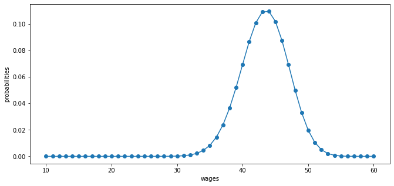
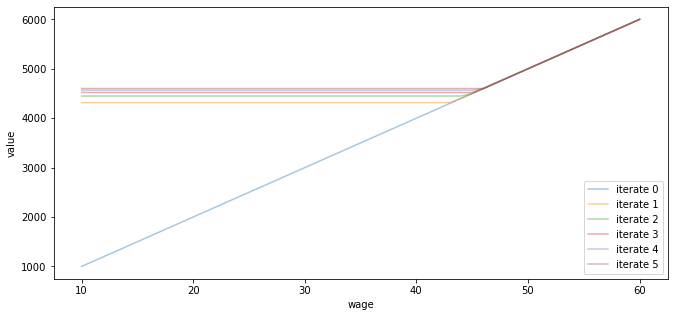
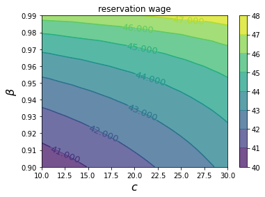
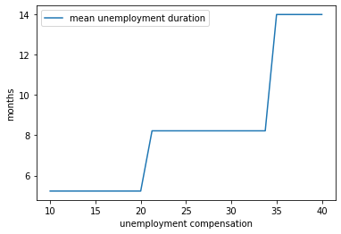
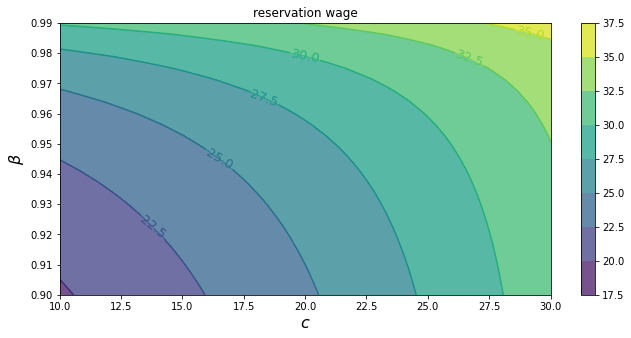

<!DOCTYPE html>

<html>
  <head>
    <meta charset="utf-8" />
    <meta name="viewport" content="width=device-width, initial-scale=1.0" /><meta name="generator" content="Docutils 0.17.1: http://docutils.sourceforge.net/" />

    <title>31. Job Search I: The McCall Search Model &#8212; Quantitative Economics with Python</title>
    <script src="https://unpkg.com/@popperjs/core@2.9.2/dist/umd/popper.min.js"></script>
    <script src="https://unpkg.com/tippy.js@6.3.1/dist/tippy-bundle.umd.js"></script>
    <script src="https://cdn.jsdelivr.net/npm/feather-icons/dist/feather.min.js"></script>
    
        <script>
            MathJax = {
            loader: {load: ['[tex]/boldsymbol', '[tex]/textmacros']},
            tex: {
                packages: {'[+]': ['boldsymbol', 'textmacros']},
                inlineMath: [['$', '$'], ['\\(', '\\)']],
                processEscapes: true,
                macros: {
                    "argmax" : "arg\\,max",
                    "argmin" : "arg\\,min",
                    "col"    : "col",
                    "Span"   :  "span",
                    "epsilon": "\\varepsilon",
                    "EE": "\\mathbb{E}",
                    "PP": "\\mathbb{P}",
                    "RR": "\\mathbb{R}",
                    "NN": "\\mathbb{N}",
                    "ZZ": "\\mathbb{Z}",
                    "aA": "\\mathcal{A}",
                    "bB": "\\mathcal{B}",
                    "cC": "\\mathcal{C}",
                    "dD": "\\mathcal{D}",
                    "eE": "\\mathcal{E}",
                    "fF": "\\mathcal{F}",
                    "gG": "\\mathcal{G}",
                    "hH": "\\mathcal{H}",
                }
            },
            svg: {
                fontCache: 'global',
                scale: 0.92,
                displayAlign: "center",
            },
            };
        </script>
    
    
    
  <link href="_static/css/theme.css" rel="stylesheet">
  <link href="_static/css/index.ff1ffe594081f20da1ef19478df9384b.css" rel="stylesheet">

    
  <link rel="stylesheet"
    href="_static/vendor/fontawesome/5.13.0/css/all.min.css">
  <link rel="preload" as="font" type="font/woff2" crossorigin
    href="_static/vendor/fontawesome/5.13.0/webfonts/fa-solid-900.woff2">
  <link rel="preload" as="font" type="font/woff2" crossorigin
    href="_static/vendor/fontawesome/5.13.0/webfonts/fa-brands-400.woff2">

    
      

    
    <link rel="stylesheet" type="text/css" href="_static/pygments.css" />
    <link rel="stylesheet" type="text/css" href="_static/quantecon-book-theme.1ef59f8f4e91ec8319176e8479c6af4e.css" />
    <link rel="stylesheet" type="text/css" href="_static/togglebutton.css" />
    <link rel="stylesheet" type="text/css" href="_static/copybutton.css" />
    <link rel="stylesheet" type="text/css" href="_static/mystnb.css" />
    <link rel="stylesheet" type="text/css" href="_static/sphinx-thebe.css" />
    <link rel="stylesheet" type="text/css" href="_static/panels-main.c949a650a448cc0ae9fd3441c0e17fb0.css" />
    <link rel="stylesheet" type="text/css" href="_static/panels-variables.06eb56fa6e07937060861dad626602ad.css" />
    
  <link rel="preload" as="script" href="_static/js/index.be7d3bbb2ef33a8344ce.js">


    <script data-url_root="./" id="documentation_options" src="_static/documentation_options.js"></script>
    <script src="_static/jquery.js"></script>
    <script src="_static/underscore.js"></script>
    <script src="_static/doctools.js"></script>
    <script src="_static/clipboard.min.js"></script>
    <script src="_static/copybutton.js"></script>
    <script>let toggleHintShow = 'Click to show';</script>
    <script>let toggleHintHide = 'Click to hide';</script>
    <script>let toggleOpenOnPrint = 'true';</script>
    <script src="_static/togglebutton.js"></script>
    <script>var togglebuttonSelector = '.toggle, .admonition.dropdown, .tag_hide_input div.cell_input, .tag_hide-input div.cell_input, .tag_hide_output div.cell_output, .tag_hide-output div.cell_output, .tag_hide_cell.cell, .tag_hide-cell.cell';</script>
    <script src="_static/sphinx-book-theme.d59cb220de22ca1c485ebbdc042f0030.js"></script>
    <script src="_static/quantecon-book-theme.15b0c36fffe88f468997fa7b698991d3.js"></script>
    <script async="async" src="https://cdn.jsdelivr.net/npm/mathjax@3/es5/tex-mml-svg.js"></script>
    <script>window.MathJax = {"tex": {"macros": {"argmax": "arg\\,max", "argmin": "arg\\,min"}}, "options": {"processHtmlClass": "tex2jax_process|mathjax_process|math|output_area"}}</script>
    <script async="async" src="https://unpkg.com/thebe@0.5.1/lib/index.js"></script>
    <script>
        const thebe_selector = ".thebe"
        const thebe_selector_input = "pre"
        const thebe_selector_output = ".output"
    </script>
    <script async="async" src="_static/sphinx-thebe.js"></script>
    <link rel="canonical" href="https://python.quantecon.org/mccall_model.html" />
    <link rel="shortcut icon" href="_static/lectures-favicon.ico"/>
    <link rel="index" title="Index" href="genindex.html" />
    <link rel="search" title="Search" href="search.html" />
    <link rel="next" title="32. Job Search II: Search and Separation" href="mccall_model_with_separation.html" />
    <link rel="prev" title="30. Cass-Koopmans Competitive Equilibrium" href="cass_koopmans_2.html" />

<!-- Normal Meta Tags -->
<meta name="author" context="Thomas J. Sargent &amp; John Stachurski" />
<meta name="keywords" content="Python, QuantEcon, Quantitative Economics, Economics, Sloan, Alfred P. Sloan Foundation, Tom J. Sargent, John Stachurski" />
<meta name="description" content=This website presents a set of lectures on quantitative economic modeling, designed and written by Thomas J. Sargent and John Stachurski. />

<!-- Twitter tags -->
<meta name="twitter:card" content="summary" />
<meta name="twitter:site" content="@quantecon" />
<meta name="twitter:title" content="Job Search I: The McCall Search Model"/>
<meta name="twitter:description" content="This website presents a set of lectures on quantitative economic modeling, designed and written by Thomas J. Sargent and John Stachurski.">
<meta name="twitter:creator" content="@quantecon">
<meta name="twitter:image" content="https://assets.quantecon.org/img/qe-twitter-logo.png">

<!-- Opengraph tags -->
<meta property="og:title" content="Job Search I: The McCall Search Model" />
<meta property="og:type" content="website" />
<meta property="og:url" content="https://python.quantecon.org/mccall_model.html" />
<meta property="og:image" content="https://assets.quantecon.org/img/qe-og-logo.png" />
<meta property="og:description" content="This website presents a set of lectures on quantitative economic modeling, designed and written by Thomas J. Sargent and John Stachurski." />
<meta property="og:site_name" content="Quantitative Economics with Python" />
<meta name="theme-color" content="#ffffff" />

  </head>
<body>


    <span id="top"></span>

    <div class="qe-wrapper">

        <div class="qe-main">

            <div class="qe-page" id=mccall_model>

                <div class="qe-page__toc">

                    <div class="inner">

                        
                        <div class="qe-page__toc-header">
                            On this page
                        </div>


                        <nav id="bd-toc-nav" class="qe-page__toc-nav">
                            <ul class="visible nav section-nav flex-column">
 <li class="toc-h2 nav-item toc-entry">
  <a class="reference internal nav-link" href="#overview">
   31.1. Overview
  </a>
 </li>
 <li class="toc-h2 nav-item toc-entry">
  <a class="reference internal nav-link" href="#the-mccall-model">
   31.2. The McCall Model
  </a>
  <ul class="nav section-nav flex-column">
   <li class="toc-h3 nav-item toc-entry">
    <a class="reference internal nav-link" href="#a-trade-off">
     31.2.1. A Trade-Off
    </a>
   </li>
   <li class="toc-h3 nav-item toc-entry">
    <a class="reference internal nav-link" href="#the-value-function">
     31.2.2. The Value Function
    </a>
   </li>
   <li class="toc-h3 nav-item toc-entry">
    <a class="reference internal nav-link" href="#the-optimal-policy">
     31.2.3. The Optimal Policy
    </a>
   </li>
  </ul>
 </li>
 <li class="toc-h2 nav-item toc-entry">
  <a class="reference internal nav-link" href="#computing-the-optimal-policy-take-1">
   31.3. Computing the Optimal Policy: Take 1
  </a>
  <ul class="nav section-nav flex-column">
   <li class="toc-h3 nav-item toc-entry">
    <a class="reference internal nav-link" href="#the-algorithm">
     31.3.1. The Algorithm
    </a>
   </li>
   <li class="toc-h3 nav-item toc-entry">
    <a class="reference internal nav-link" href="#the-fixed-point-theory">
     31.3.2. The Fixed Point Theory
    </a>
   </li>
   <li class="toc-h3 nav-item toc-entry">
    <a class="reference internal nav-link" href="#implementation">
     31.3.3. Implementation
    </a>
   </li>
   <li class="toc-h3 nav-item toc-entry">
    <a class="reference internal nav-link" href="#comparative-statics">
     31.3.4. Comparative Statics
    </a>
   </li>
  </ul>
 </li>
 <li class="toc-h2 nav-item toc-entry">
  <a class="reference internal nav-link" href="#computing-the-optimal-policy-take-2">
   31.4. Computing the Optimal Policy: Take 2
  </a>
 </li>
 <li class="toc-h2 nav-item toc-entry">
  <a class="reference internal nav-link" href="#exercises">
   31.5. Exercises
  </a>
  <ul class="nav section-nav flex-column">
   <li class="toc-h3 nav-item toc-entry">
    <a class="reference internal nav-link" href="#exercise-1">
     31.5.1. Exercise 1
    </a>
   </li>
   <li class="toc-h3 nav-item toc-entry">
    <a class="reference internal nav-link" href="#exercise-2">
     31.5.2. Exercise 2
    </a>
   </li>
  </ul>
 </li>
 <li class="toc-h2 nav-item toc-entry">
  <a class="reference internal nav-link" href="#solutions">
   31.6. Solutions
  </a>
  <ul class="nav section-nav flex-column">
   <li class="toc-h3 nav-item toc-entry">
    <a class="reference internal nav-link" href="#id2">
     31.6.1. Exercise 1
    </a>
   </li>
   <li class="toc-h3 nav-item toc-entry">
    <a class="reference internal nav-link" href="#id3">
     31.6.2. Exercise 2
    </a>
   </li>
  </ul>
 </li>
</ul>

                            <p class="logo">
                                
                                    
                                    <a href=https://quantecon.org></a>
                                    
                                
                            </p>

                            <p class="powered">Powered by <a href="https://jupyterbook.org/">Jupyter Book</a></p>

                        </nav>

                        <div class="qe-page__toc-footer">
                            
                            
                            <p><a href="#top"><strong>Back to top</strong></a></p>
                        </div>

                    </div>

                </div>

                <div class="qe-page__header">

                    <div class="qe-page__header-copy">

                        <p class="qe-page__header-heading"><a href="intro.html">Quantitative Economics with Python</a></p>

                        <p class="qe-page__header-subheading">Job Search I: The McCall Search Model</p>

                    </div>

                    <p class="qe-page__header-authors">Thomas J. Sargent & John Stachurski</p>

                </div> <!-- .page__header -->


                
                <main class="qe-page__content" role="main">
                    
                    <div>
                        
  <div id="qe-notebook-header" align="right" style="text-align:right;">
        <a href="https://quantecon.org/" title="quantecon.org">
                
        </a>
</div><section class="tex2jax_ignore mathjax_ignore" id="job-search-i-the-mccall-search-model">
<h1><a class="toc-backref" href="#id4"><span class="section-number">31. </span>Job Search I: The McCall Search Model</a><a class="headerlink" href="#job-search-i-the-mccall-search-model" title="Permalink to this headline">¶</a></h1>
<div class="contents topic" id="contents">
<p class="topic-title">Contents</p>
<ul class="simple">
<li><p><a class="reference internal" href="#job-search-i-the-mccall-search-model" id="id4">Job Search I: The McCall Search Model</a></p>
<ul>
<li><p><a class="reference internal" href="#overview" id="id5">Overview</a></p></li>
<li><p><a class="reference internal" href="#the-mccall-model" id="id6">The McCall Model</a></p></li>
<li><p><a class="reference internal" href="#computing-the-optimal-policy-take-1" id="id7">Computing the Optimal Policy: Take 1</a></p></li>
<li><p><a class="reference internal" href="#computing-the-optimal-policy-take-2" id="id8">Computing the Optimal Policy: Take 2</a></p></li>
<li><p><a class="reference internal" href="#exercises" id="id9">Exercises</a></p></li>
<li><p><a class="reference internal" href="#solutions" id="id10">Solutions</a></p></li>
</ul>
</li>
</ul>
</div>
<blockquote class="epigraph">
<div><p>“Questioning a McCall worker is like having a conversation with an out-of-work friend:
‘Maybe you are setting your sights too high’, or ‘Why did you quit your old job before you
had a new one lined up?’ This is real social science: an attempt to model, to understand,
human behavior by visualizing the situation people find themselves in, the options they face
and the pros and cons as they themselves see them.” – Robert E. Lucas, Jr.</p>
</div></blockquote>
<p>In addition to what’s in Anaconda, this lecture will need the following libraries:</p>
<div class="cell tag_hide-output docutils container">
<div class="cell_input docutils container">
<div class="highlight-ipython3 notranslate"><div class="highlight"><pre><span></span><span class="o">!</span>conda install -y quantecon
</pre></div>
</div>
</div>
<div class="cell_output docutils container">
<div class="output stream highlight-myst-ansi notranslate"><div class="highlight"><pre><span></span>Collecting package metadata (current_repodata.json): - 
</pre></div>
</div>
<div class="output stream highlight-myst-ansi notranslate"><div class="highlight"><pre><span></span>\ 
</pre></div>
</div>
<div class="output stream highlight-myst-ansi notranslate"><div class="highlight"><pre><span></span>| 
</pre></div>
</div>
<div class="output stream highlight-myst-ansi notranslate"><div class="highlight"><pre><span></span>/ 
</pre></div>
</div>
<div class="output stream highlight-myst-ansi notranslate"><div class="highlight"><pre><span></span>- 
</pre></div>
</div>
<div class="output stream highlight-myst-ansi notranslate"><div class="highlight"><pre><span></span>\ 
</pre></div>
</div>
<div class="output stream highlight-myst-ansi notranslate"><div class="highlight"><pre><span></span>| 
</pre></div>
</div>
<div class="output stream highlight-myst-ansi notranslate"><div class="highlight"><pre><span></span>/ 
</pre></div>
</div>
<div class="output stream highlight-myst-ansi notranslate"><div class="highlight"><pre><span></span>- 
</pre></div>
</div>
<div class="output stream highlight-myst-ansi notranslate"><div class="highlight"><pre><span></span>\ 
</pre></div>
</div>
<div class="output stream highlight-myst-ansi notranslate"><div class="highlight"><pre><span></span>| 
</pre></div>
</div>
<div class="output stream highlight-myst-ansi notranslate"><div class="highlight"><pre><span></span>/ 
</pre></div>
</div>
<div class="output stream highlight-myst-ansi notranslate"><div class="highlight"><pre><span></span>done
Solving environment: \ 
</pre></div>
</div>
<div class="output stream highlight-myst-ansi notranslate"><div class="highlight"><pre><span></span>| 
</pre></div>
</div>
<div class="output stream highlight-myst-ansi notranslate"><div class="highlight"><pre><span></span>/ 
</pre></div>
</div>
<div class="output stream highlight-myst-ansi notranslate"><div class="highlight"><pre><span></span>- 
</pre></div>
</div>
<div class="output stream highlight-myst-ansi notranslate"><div class="highlight"><pre><span></span>\ 
</pre></div>
</div>
<div class="output stream highlight-myst-ansi notranslate"><div class="highlight"><pre><span></span>| 
</pre></div>
</div>
<div class="output stream highlight-myst-ansi notranslate"><div class="highlight"><pre><span></span>/ 
</pre></div>
</div>
<div class="output stream highlight-myst-ansi notranslate"><div class="highlight"><pre><span></span>- 
</pre></div>
</div>
<div class="output stream highlight-myst-ansi notranslate"><div class="highlight"><pre><span></span>\ 
</pre></div>
</div>
<div class="output stream highlight-myst-ansi notranslate"><div class="highlight"><pre><span></span>| 
</pre></div>
</div>
<div class="output stream highlight-myst-ansi notranslate"><div class="highlight"><pre><span></span>/ 
</pre></div>
</div>
<div class="output stream highlight-myst-ansi notranslate"><div class="highlight"><pre><span></span>- 
</pre></div>
</div>
<div class="output stream highlight-myst-ansi notranslate"><div class="highlight"><pre><span></span>\ 
</pre></div>
</div>
<div class="output stream highlight-myst-ansi notranslate"><div class="highlight"><pre><span></span>| 
</pre></div>
</div>
<div class="output stream highlight-myst-ansi notranslate"><div class="highlight"><pre><span></span>/ 
</pre></div>
</div>
<div class="output stream highlight-myst-ansi notranslate"><div class="highlight"><pre><span></span>- 
</pre></div>
</div>
<div class="output stream highlight-myst-ansi notranslate"><div class="highlight"><pre><span></span>\ 
</pre></div>
</div>
<div class="output stream highlight-myst-ansi notranslate"><div class="highlight"><pre><span></span>| 
</pre></div>
</div>
<div class="output stream highlight-myst-ansi notranslate"><div class="highlight"><pre><span></span>/ 
</pre></div>
</div>
<div class="output stream highlight-myst-ansi notranslate"><div class="highlight"><pre><span></span>- 
</pre></div>
</div>
<div class="output stream highlight-myst-ansi notranslate"><div class="highlight"><pre><span></span>done
</pre></div>
</div>
<div class="output stream highlight-myst-ansi notranslate"><div class="highlight"><pre><span></span># All requested packages already installed.
</pre></div>
</div>
</div>
</div>
<section id="overview">
<h2><a class="toc-backref" href="#id5"><span class="section-number">31.1. </span>Overview</a><a class="headerlink" href="#overview" title="Permalink to this headline">¶</a></h2>
<p>The McCall search model <span id="id1">[<a class="reference internal" href="zreferences.html#id175">McC70</a>]</span> helped transform economists’ way of thinking about labor markets.</p>
<p>To clarify vague notions such as “involuntary” unemployment, McCall modeled the decision problem of unemployed agents directly, in terms of factors such as</p>
<ul class="simple">
<li><p>current and likely future wages</p></li>
<li><p>impatience</p></li>
<li><p>unemployment compensation</p></li>
</ul>
<p>To solve the decision problem he used dynamic programming.</p>
<p>Here we set up McCall’s model and adopt the same solution method.</p>
<p>As we’ll see, McCall’s model is not only interesting in its own right but also an excellent vehicle for learning dynamic programming.</p>
<p>Let’s start with some imports:</p>
<div class="cell docutils container">
<div class="cell_input docutils container">
<div class="highlight-ipython3 notranslate"><div class="highlight"><pre><span></span><span class="o">%</span><span class="k">matplotlib</span> inline
<span class="kn">import</span> <span class="nn">matplotlib.pyplot</span> <span class="k">as</span> <span class="nn">plt</span>
<span class="n">plt</span><span class="o">.</span><span class="n">rcParams</span><span class="p">[</span><span class="s2">&quot;figure.figsize&quot;</span><span class="p">]</span> <span class="o">=</span> <span class="p">(</span><span class="mi">11</span><span class="p">,</span> <span class="mi">5</span><span class="p">)</span>  <span class="c1">#set default figure size</span>
<span class="kn">import</span> <span class="nn">numpy</span> <span class="k">as</span> <span class="nn">np</span>
<span class="kn">from</span> <span class="nn">numba</span> <span class="kn">import</span> <span class="n">jit</span><span class="p">,</span> <span class="n">float64</span>
<span class="kn">from</span> <span class="nn">numba.experimental</span> <span class="kn">import</span> <span class="n">jitclass</span>
<span class="kn">import</span> <span class="nn">quantecon</span> <span class="k">as</span> <span class="nn">qe</span>
<span class="kn">from</span> <span class="nn">quantecon.distributions</span> <span class="kn">import</span> <span class="n">BetaBinomial</span>
</pre></div>
</div>
</div>
</div>
</section>
<section id="the-mccall-model">
<h2><a class="toc-backref" href="#id6"><span class="section-number">31.2. </span>The McCall Model</a><a class="headerlink" href="#the-mccall-model" title="Permalink to this headline">¶</a></h2>
<p id="index-0">An unemployed agent receives in each period a job offer at wage <span class="math notranslate nohighlight">\(w_t\)</span>.</p>
<p>The wage offer is a nonnegative function of some underlying state:</p>
<div class="math notranslate nohighlight">
\[
w_t = w(s_t) \quad \text{where } \; s_t \in \mathbb{S}
\]</div>
<p>Here you should think of state process <span class="math notranslate nohighlight">\(\{s_t\}\)</span> as some underlying, unspecified
random factor that impacts on wages.</p>
<p>(Introducing an exogenous stochastic state process is a standard way for
economists to inject randomness into their models.)</p>
<p>In this lecture, we adopt the following simple environment:</p>
<ul class="simple">
<li><p><span class="math notranslate nohighlight">\(\{s_t\}\)</span> is IID, with <span class="math notranslate nohighlight">\(q(s)\)</span> being the probability of observing state <span class="math notranslate nohighlight">\(s\)</span> in <span class="math notranslate nohighlight">\(\mathbb{S}\)</span> at each point in time, and</p></li>
<li><p>the agent observes <span class="math notranslate nohighlight">\(s_t\)</span> at the start of <span class="math notranslate nohighlight">\(t\)</span> and hence knows
<span class="math notranslate nohighlight">\(w_t = w(s_t)\)</span>,</p></li>
<li><p>the set <span class="math notranslate nohighlight">\(\mathbb S\)</span> is finite.</p></li>
</ul>
<p>(In later lectures, we will relax all of these assumptions.)</p>
<p>At time <span class="math notranslate nohighlight">\(t\)</span>, our agent has two choices:</p>
<ol class="simple">
<li><p>Accept the offer and work permanently at constant wage <span class="math notranslate nohighlight">\(w_t\)</span>.</p></li>
<li><p>Reject the offer, receive unemployment compensation <span class="math notranslate nohighlight">\(c\)</span>, and reconsider next period.</p></li>
</ol>
<p>The agent is infinitely lived and aims to maximize the expected discounted
sum of earnings</p>
<div class="math notranslate nohighlight">
\[
\mathbb{E} \sum_{t=0}^{\infty} \beta^t y_t
\]</div>
<p>The constant <span class="math notranslate nohighlight">\(\beta\)</span> lies in <span class="math notranslate nohighlight">\((0, 1)\)</span> and is called a <strong>discount factor</strong>.</p>
<p>The smaller is <span class="math notranslate nohighlight">\(\beta\)</span>, the more the agent discounts future utility relative to current utility.</p>
<p>The variable  <span class="math notranslate nohighlight">\(y_t\)</span> is income, equal to</p>
<ul class="simple">
<li><p>his/her wage <span class="math notranslate nohighlight">\(w_t\)</span> when employed</p></li>
<li><p>unemployment compensation <span class="math notranslate nohighlight">\(c\)</span> when unemployed</p></li>
</ul>
<p>The agent is assumed to know that <span class="math notranslate nohighlight">\(\{s_t\}\)</span> is IID with common
distribution <span class="math notranslate nohighlight">\(q\)</span> and can use this when computing expectations.</p>
<section id="a-trade-off">
<h3><span class="section-number">31.2.1. </span>A Trade-Off<a class="headerlink" href="#a-trade-off" title="Permalink to this headline">¶</a></h3>
<p>The worker faces a trade-off:</p>
<ul class="simple">
<li><p>Waiting too long for a good offer is costly, since the future is discounted.</p></li>
<li><p>Accepting too early is costly, since better offers might arrive in the future.</p></li>
</ul>
<p>To decide optimally in the face of this trade-off, we use dynamic programming.</p>
<p>Dynamic programming can be thought of as a two-step procedure that</p>
<ol class="simple">
<li><p>first assigns values to “states” and</p></li>
<li><p>then deduces optimal actions given those values</p></li>
</ol>
<p>We’ll go through these steps in turn.</p>
</section>
<section id="the-value-function">
<h3><span class="section-number">31.2.2. </span>The Value Function<a class="headerlink" href="#the-value-function" title="Permalink to this headline">¶</a></h3>
<p>In order to optimally trade-off current and future rewards, we need to think about two things:</p>
<ol class="simple">
<li><p>the current payoffs we get from different choices</p></li>
<li><p>the different states that those choices will lead to in next period (in this case, either employment or unemployment)</p></li>
</ol>
<p>To weigh these two aspects of the decision problem, we need to assign <em>values</em>
to states.</p>
<p>To this end, let <span class="math notranslate nohighlight">\(v^*(s)\)</span> be the total lifetime <em>value</em> accruing to an
unemployed worker who enters the current period unemployed when the state is
<span class="math notranslate nohighlight">\(s \in \mathbb{S}\)</span>.</p>
<p>In particular, the agent has wage offer <span class="math notranslate nohighlight">\(w(s)\)</span> in hand.</p>
<p>More precisely, <span class="math notranslate nohighlight">\(v^*(s)\)</span> denotes the value of the objective function
<a class="reference internal" href="mccall_model_with_separation.html#equation-objective">(32.1)</a> when an agent in this situation makes <em>optimal</em> decisions now
and at all future points in time.</p>
<p>Of course <span class="math notranslate nohighlight">\(v^*(s)\)</span> is not trivial to calculate because we don’t yet know
what decisions are optimal and what aren’t!</p>
<p>But think of <span class="math notranslate nohighlight">\(v^*\)</span> as a function that assigns to each possible state
<span class="math notranslate nohighlight">\(s\)</span> the maximal lifetime value that can be obtained with that offer in
hand.</p>
<p>A crucial observation is that this function <span class="math notranslate nohighlight">\(v^*\)</span> must satisfy the
recursion</p>
<div class="math notranslate nohighlight" id="equation-odu-pv">
<span class="eqno">(31.1)<a class="headerlink" href="#equation-odu-pv" title="Permalink to this equation">¶</a></span>\[v^*(s)
= \max \left\{
        \frac{w(s)}{1 - \beta}, \, c + \beta
        \sum_{s' \in \mathbb{S}} v^*(s') q (s')
    \right\}\]</div>
<p>for every possible <span class="math notranslate nohighlight">\(s\)</span>  in <span class="math notranslate nohighlight">\(\mathbb S\)</span>.</p>
<p>This important equation is a version of the <strong>Bellman equation</strong>, which is
ubiquitous in economic dynamics and other fields involving planning over time.</p>
<p>The intuition behind it is as follows:</p>
<ul class="simple">
<li><p>the first term inside the max operation is the lifetime payoff from accepting current offer, since</p></li>
</ul>
<div class="math notranslate nohighlight">
\[
\frac{w(s)}{1 - \beta} = w(s) + \beta w(s) + \beta^2 w(s) + \cdots
\]</div>
<ul class="simple">
<li><p>the second term inside the max operation is the <strong>continuation value</strong>, which is the lifetime payoff from rejecting the current offer and then behaving optimally in all subsequent periods</p></li>
</ul>
<p>If we optimize and pick the best of these two options, we obtain maximal lifetime value from today, given current state <span class="math notranslate nohighlight">\(s\)</span>.</p>
<p>But this is precisely <span class="math notranslate nohighlight">\(v^*(s)\)</span>, which is the l.h.s. of <a class="reference internal" href="#equation-odu-pv">(31.1)</a>.</p>
</section>
<section id="the-optimal-policy">
<h3><span class="section-number">31.2.3. </span>The Optimal Policy<a class="headerlink" href="#the-optimal-policy" title="Permalink to this headline">¶</a></h3>
<p>Suppose for now that we are able to solve <a class="reference internal" href="#equation-odu-pv">(31.1)</a> for the unknown
function <span class="math notranslate nohighlight">\(v^*\)</span>.</p>
<p>Once we have this function in hand we can behave optimally (i.e., make the
right choice between accept and reject).</p>
<p>All we have to do is select the maximal choice on the r.h.s. of <a class="reference internal" href="#equation-odu-pv">(31.1)</a>.</p>
<p>The optimal action is best thought of as a <strong>policy</strong>, which is, in general, a map from
states to actions.</p>
<p>Given <em>any</em> <span class="math notranslate nohighlight">\(s\)</span>, we can read off the corresponding best choice (accept or
reject) by picking the max on the r.h.s. of <a class="reference internal" href="#equation-odu-pv">(31.1)</a>.</p>
<p>Thus, we have a map from <span class="math notranslate nohighlight">\(\mathbb R\)</span> to <span class="math notranslate nohighlight">\(\{0, 1\}\)</span>, with 1 meaning accept and 0 meaning reject.</p>
<p>We can write the policy as follows</p>
<div class="math notranslate nohighlight">
\[
\sigma(s) := \mathbf{1}
    \left\{
        \frac{w(s)}{1 - \beta} \geq c + \beta \sum_{s' \in \mathbb S}
        v^*(s') q (s')
    \right\}
\]</div>
<p>Here <span class="math notranslate nohighlight">\(\mathbf{1}\{ P \} = 1\)</span> if statement <span class="math notranslate nohighlight">\(P\)</span> is true and equals 0 otherwise.</p>
<p>We can also write this as</p>
<div class="math notranslate nohighlight">
\[
\sigma(s) := \mathbf{1} \{ w(s) \geq \bar w \}
\]</div>
<p>where</p>
<div class="math notranslate nohighlight" id="equation-reswage">
<span class="eqno">(31.2)<a class="headerlink" href="#equation-reswage" title="Permalink to this equation">¶</a></span>\[\bar w := (1 - \beta) \left\{ c + \beta \sum_{s'} v^*(s') q (s') \right\}\]</div>
<p>Here <span class="math notranslate nohighlight">\(\bar w\)</span> (called the <em>reservation wage</em>) is a constant depending on <span class="math notranslate nohighlight">\(\beta, c\)</span> and the wage distribution.</p>
<p>The agent should accept if and only if the current wage offer exceeds the reservation wage.</p>
<p>In view of <a class="reference internal" href="#equation-reswage">(31.2)</a>, we can compute this reservation wage if we can compute the value function.</p>
</section>
</section>
<section id="computing-the-optimal-policy-take-1">
<h2><a class="toc-backref" href="#id7"><span class="section-number">31.3. </span>Computing the Optimal Policy: Take 1</a><a class="headerlink" href="#computing-the-optimal-policy-take-1" title="Permalink to this headline">¶</a></h2>
<p>To put the above ideas into action, we need to compute the value function at
each possible state <span class="math notranslate nohighlight">\(s \in \mathbb S\)</span>.</p>
<p>Let’s suppose that <span class="math notranslate nohighlight">\(\mathbb S = \{1, \ldots, n\}\)</span>.</p>
<p>The value function is then represented by the vector <span class="math notranslate nohighlight">\(v^* =
(v^*(i))_{i=1}^n\)</span>.</p>
<p>In view of <a class="reference internal" href="#equation-odu-pv">(31.1)</a>, this vector satisfies the nonlinear system of equations</p>
<div class="math notranslate nohighlight" id="equation-odu-pv2">
<span class="eqno">(31.3)<a class="headerlink" href="#equation-odu-pv2" title="Permalink to this equation">¶</a></span>\[v^*(i)
= \max \left\{
        \frac{w(i)}{1 - \beta}, \, c + \beta \sum_{1 \leq j \leq n}
            v^*(j) q (j)
    \right\}
\quad
\text{for } i = 1, \ldots, n\]</div>
<section id="the-algorithm">
<h3><span class="section-number">31.3.1. </span>The Algorithm<a class="headerlink" href="#the-algorithm" title="Permalink to this headline">¶</a></h3>
<p>To compute this vector, we use successive approximations:</p>
<p>Step 1: pick an arbitrary initial guess <span class="math notranslate nohighlight">\(v \in \mathbb R^n\)</span>.</p>
<p>Step 2: compute a new vector <span class="math notranslate nohighlight">\(v' \in \mathbb R^n\)</span> via</p>
<div class="math notranslate nohighlight" id="equation-odu-pv2p">
<span class="eqno">(31.4)<a class="headerlink" href="#equation-odu-pv2p" title="Permalink to this equation">¶</a></span>\[v'(i)
= \max \left\{
        \frac{w(i)}{1 - \beta}, \, c + \beta \sum_{1 \leq j \leq n}
            v(j) q (j)
    \right\}
\quad
\text{for } i = 1, \ldots, n\]</div>
<p>Step 3: calculate a measure of the deviation between <span class="math notranslate nohighlight">\(v\)</span> and <span class="math notranslate nohighlight">\(v'\)</span>, such as <span class="math notranslate nohighlight">\(\max_i |v(i)- v'(i)|\)</span>.</p>
<p>Step 4: if the deviation is larger than some fixed tolerance, set <span class="math notranslate nohighlight">\(v = v'\)</span> and go to step 2, else continue.</p>
<p>Step 5: return <span class="math notranslate nohighlight">\(v\)</span>.</p>
<p>For small tolerance, the returned function <span class="math notranslate nohighlight">\(v\)</span> is a close approximation to the value function <span class="math notranslate nohighlight">\(v^*\)</span>.</p>
<p>The theory below elaborates on this point.</p>
</section>
<section id="the-fixed-point-theory">
<h3><span class="section-number">31.3.2. </span>The Fixed Point Theory<a class="headerlink" href="#the-fixed-point-theory" title="Permalink to this headline">¶</a></h3>
<p>What’s the mathematics behind these ideas?</p>
<p>First, one defines a mapping <span class="math notranslate nohighlight">\(T\)</span> from <span class="math notranslate nohighlight">\(\mathbb R^n\)</span> to
itself via</p>
<div class="math notranslate nohighlight" id="equation-odu-pv3">
<span class="eqno">(31.5)<a class="headerlink" href="#equation-odu-pv3" title="Permalink to this equation">¶</a></span>\[(Tv)(i)
= \max \left\{
        \frac{w(i)}{1 - \beta}, \, c + \beta \sum_{1 \leq j \leq n}
            v(j) q (j)
    \right\}
\quad
\text{for } i = 1, \ldots, n\]</div>
<p>(A new vector <span class="math notranslate nohighlight">\(Tv\)</span> is obtained from given vector <span class="math notranslate nohighlight">\(v\)</span> by evaluating
the r.h.s. at each <span class="math notranslate nohighlight">\(i\)</span>.)</p>
<p>The element <span class="math notranslate nohighlight">\(v_k\)</span> in the sequence <span class="math notranslate nohighlight">\(\{v_k\}\)</span> of successive
approximations corresponds to <span class="math notranslate nohighlight">\(T^k v\)</span>.</p>
<ul class="simple">
<li><p>This is <span class="math notranslate nohighlight">\(T\)</span> applied <span class="math notranslate nohighlight">\(k\)</span> times, starting at the initial guess
<span class="math notranslate nohighlight">\(v\)</span></p></li>
</ul>
<p>One can show that the conditions of the <a class="reference external" href="https://en.wikipedia.org/wiki/Banach_fixed-point_theorem">Banach fixed point theorem</a> are
satisfied by <span class="math notranslate nohighlight">\(T\)</span> on <span class="math notranslate nohighlight">\(\mathbb R^n\)</span>.</p>
<p>One implication is that <span class="math notranslate nohighlight">\(T\)</span> has a unique fixed point in <span class="math notranslate nohighlight">\(\mathbb R^n\)</span>.</p>
<ul class="simple">
<li><p>That is, a unique vector <span class="math notranslate nohighlight">\(\bar v\)</span> such that <span class="math notranslate nohighlight">\(T \bar v = \bar v\)</span>.</p></li>
</ul>
<p>Moreover, it’s immediate from the definition of <span class="math notranslate nohighlight">\(T\)</span> that this fixed
point is <span class="math notranslate nohighlight">\(v^*\)</span>.</p>
<p>A second implication of the  Banach contraction mapping theorem is that
<span class="math notranslate nohighlight">\(\{ T^k v \}\)</span> converges to the fixed point <span class="math notranslate nohighlight">\(v^*\)</span> regardless of
<span class="math notranslate nohighlight">\(v\)</span>.</p>
</section>
<section id="implementation">
<h3><span class="section-number">31.3.3. </span>Implementation<a class="headerlink" href="#implementation" title="Permalink to this headline">¶</a></h3>
<p>Our default for <span class="math notranslate nohighlight">\(q\)</span>, the distribution of the state process, will be
<a class="reference external" href="https://en.wikipedia.org/wiki/Beta-binomial_distribution">Beta-binomial</a>.</p>
<div class="cell docutils container">
<div class="cell_input docutils container">
<div class="highlight-ipython3 notranslate"><div class="highlight"><pre><span></span><span class="n">n</span><span class="p">,</span> <span class="n">a</span><span class="p">,</span> <span class="n">b</span> <span class="o">=</span> <span class="mi">50</span><span class="p">,</span> <span class="mi">200</span><span class="p">,</span> <span class="mi">100</span>                        <span class="c1"># default parameters</span>
<span class="n">q_default</span> <span class="o">=</span> <span class="n">BetaBinomial</span><span class="p">(</span><span class="n">n</span><span class="p">,</span> <span class="n">a</span><span class="p">,</span> <span class="n">b</span><span class="p">)</span><span class="o">.</span><span class="n">pdf</span><span class="p">()</span>       <span class="c1"># default choice of q</span>
</pre></div>
</div>
</div>
</div>
<p>Our default set of values for wages will be</p>
<div class="cell docutils container">
<div class="cell_input docutils container">
<div class="highlight-ipython3 notranslate"><div class="highlight"><pre><span></span><span class="n">w_min</span><span class="p">,</span> <span class="n">w_max</span> <span class="o">=</span> <span class="mi">10</span><span class="p">,</span> <span class="mi">60</span>
<span class="n">w_default</span> <span class="o">=</span> <span class="n">np</span><span class="o">.</span><span class="n">linspace</span><span class="p">(</span><span class="n">w_min</span><span class="p">,</span> <span class="n">w_max</span><span class="p">,</span> <span class="n">n</span><span class="o">+</span><span class="mi">1</span><span class="p">)</span>
</pre></div>
</div>
</div>
</div>
<p>Here’s a plot of the probabilities of different wage outcomes:</p>
<div class="cell docutils container">
<div class="cell_input docutils container">
<div class="highlight-ipython3 notranslate"><div class="highlight"><pre><span></span><span class="n">fig</span><span class="p">,</span> <span class="n">ax</span> <span class="o">=</span> <span class="n">plt</span><span class="o">.</span><span class="n">subplots</span><span class="p">()</span>
<span class="n">ax</span><span class="o">.</span><span class="n">plot</span><span class="p">(</span><span class="n">w_default</span><span class="p">,</span> <span class="n">q_default</span><span class="p">,</span> <span class="s1">&#39;-o&#39;</span><span class="p">,</span> <span class="n">label</span><span class="o">=</span><span class="s1">&#39;$q(w(i))$&#39;</span><span class="p">)</span>
<span class="n">ax</span><span class="o">.</span><span class="n">set_xlabel</span><span class="p">(</span><span class="s1">&#39;wages&#39;</span><span class="p">)</span>
<span class="n">ax</span><span class="o">.</span><span class="n">set_ylabel</span><span class="p">(</span><span class="s1">&#39;probabilities&#39;</span><span class="p">)</span>

<span class="n">plt</span><span class="o">.</span><span class="n">show</span><span class="p">()</span>
</pre></div>
</div>
</div>
<div class="cell_output docutils container">

</div>
</div>
<p>We are going to use Numba to accelerate our code.</p>
<ul class="simple">
<li><p>See, in particular, the discussion of <code class="docutils literal notranslate"><span class="pre">&#64;jitclass</span></code> in <a class="reference external" href="https://python-programming.quantecon.org/numba.html">our lecture on Numba</a>.</p></li>
</ul>
<p>The following helps Numba by providing some type</p>
<div class="cell docutils container">
<div class="cell_input docutils container">
<div class="highlight-ipython3 notranslate"><div class="highlight"><pre><span></span><span class="n">mccall_data</span> <span class="o">=</span> <span class="p">[</span>
    <span class="p">(</span><span class="s1">&#39;c&#39;</span><span class="p">,</span> <span class="n">float64</span><span class="p">),</span>      <span class="c1"># unemployment compensation</span>
    <span class="p">(</span><span class="s1">&#39;β&#39;</span><span class="p">,</span> <span class="n">float64</span><span class="p">),</span>      <span class="c1"># discount factor</span>
    <span class="p">(</span><span class="s1">&#39;w&#39;</span><span class="p">,</span> <span class="n">float64</span><span class="p">[:]),</span>   <span class="c1"># array of wage values, w[i] = wage at state i</span>
    <span class="p">(</span><span class="s1">&#39;q&#39;</span><span class="p">,</span> <span class="n">float64</span><span class="p">[:])</span>    <span class="c1"># array of probabilities</span>
<span class="p">]</span>
</pre></div>
</div>
</div>
</div>
<p>Here’s a class that stores the data and computes the values of state-action pairs,
i.e. the value in the maximum bracket on the right hand side of the Bellman equation <a class="reference internal" href="#equation-odu-pv2p">(31.4)</a>,
given the current state and an arbitrary feasible action.</p>
<p>Default parameter values are embedded in the class.</p>
<div class="cell docutils container">
<div class="cell_input docutils container">
<div class="highlight-ipython3 notranslate"><div class="highlight"><pre><span></span><span class="nd">@jitclass</span><span class="p">(</span><span class="n">mccall_data</span><span class="p">)</span>
<span class="k">class</span> <span class="nc">McCallModel</span><span class="p">:</span>

    <span class="k">def</span> <span class="fm">__init__</span><span class="p">(</span><span class="bp">self</span><span class="p">,</span> <span class="n">c</span><span class="o">=</span><span class="mi">25</span><span class="p">,</span> <span class="n">β</span><span class="o">=</span><span class="mf">0.99</span><span class="p">,</span> <span class="n">w</span><span class="o">=</span><span class="n">w_default</span><span class="p">,</span> <span class="n">q</span><span class="o">=</span><span class="n">q_default</span><span class="p">):</span>

        <span class="bp">self</span><span class="o">.</span><span class="n">c</span><span class="p">,</span> <span class="bp">self</span><span class="o">.</span><span class="n">β</span> <span class="o">=</span> <span class="n">c</span><span class="p">,</span> <span class="n">β</span>
        <span class="bp">self</span><span class="o">.</span><span class="n">w</span><span class="p">,</span> <span class="bp">self</span><span class="o">.</span><span class="n">q</span> <span class="o">=</span> <span class="n">w_default</span><span class="p">,</span> <span class="n">q_default</span>

    <span class="k">def</span> <span class="nf">state_action_values</span><span class="p">(</span><span class="bp">self</span><span class="p">,</span> <span class="n">i</span><span class="p">,</span> <span class="n">v</span><span class="p">):</span>
        <span class="sd">&quot;&quot;&quot;</span>
<span class="sd">        The values of state-action pairs.</span>
<span class="sd">        &quot;&quot;&quot;</span>
        <span class="c1"># Simplify names</span>
        <span class="n">c</span><span class="p">,</span> <span class="n">β</span><span class="p">,</span> <span class="n">w</span><span class="p">,</span> <span class="n">q</span> <span class="o">=</span> <span class="bp">self</span><span class="o">.</span><span class="n">c</span><span class="p">,</span> <span class="bp">self</span><span class="o">.</span><span class="n">β</span><span class="p">,</span> <span class="bp">self</span><span class="o">.</span><span class="n">w</span><span class="p">,</span> <span class="bp">self</span><span class="o">.</span><span class="n">q</span>
        <span class="c1"># Evaluate value for each state-action pair</span>
        <span class="c1"># Consider action = accept or reject the current offer</span>
        <span class="n">accept</span> <span class="o">=</span> <span class="n">w</span><span class="p">[</span><span class="n">i</span><span class="p">]</span> <span class="o">/</span> <span class="p">(</span><span class="mi">1</span> <span class="o">-</span> <span class="n">β</span><span class="p">)</span>
        <span class="n">reject</span> <span class="o">=</span> <span class="n">c</span> <span class="o">+</span> <span class="n">β</span> <span class="o">*</span> <span class="n">np</span><span class="o">.</span><span class="n">sum</span><span class="p">(</span><span class="n">v</span> <span class="o">*</span> <span class="n">q</span><span class="p">)</span>

        <span class="k">return</span> <span class="n">np</span><span class="o">.</span><span class="n">array</span><span class="p">([</span><span class="n">accept</span><span class="p">,</span> <span class="n">reject</span><span class="p">])</span>
</pre></div>
</div>
</div>
</div>
<p>Based on these defaults, let’s try plotting the first few approximate value functions
in the sequence <span class="math notranslate nohighlight">\(\{ T^k v \}\)</span>.</p>
<p>We will start from guess <span class="math notranslate nohighlight">\(v\)</span> given by <span class="math notranslate nohighlight">\(v(i) = w(i) / (1 - β)\)</span>, which is the value of accepting at every given wage.</p>
<p>Here’s a function to implement this:</p>
<div class="cell docutils container">
<div class="cell_input docutils container">
<div class="highlight-ipython3 notranslate"><div class="highlight"><pre><span></span><span class="k">def</span> <span class="nf">plot_value_function_seq</span><span class="p">(</span><span class="n">mcm</span><span class="p">,</span> <span class="n">ax</span><span class="p">,</span> <span class="n">num_plots</span><span class="o">=</span><span class="mi">6</span><span class="p">):</span>
    <span class="sd">&quot;&quot;&quot;</span>
<span class="sd">    Plot a sequence of value functions.</span>

<span class="sd">        * mcm is an instance of McCallModel</span>
<span class="sd">        * ax is an axes object that implements a plot method.</span>

<span class="sd">    &quot;&quot;&quot;</span>

    <span class="n">n</span> <span class="o">=</span> <span class="nb">len</span><span class="p">(</span><span class="n">mcm</span><span class="o">.</span><span class="n">w</span><span class="p">)</span>
    <span class="n">v</span> <span class="o">=</span> <span class="n">mcm</span><span class="o">.</span><span class="n">w</span> <span class="o">/</span> <span class="p">(</span><span class="mi">1</span> <span class="o">-</span> <span class="n">mcm</span><span class="o">.</span><span class="n">β</span><span class="p">)</span>
    <span class="n">v_next</span> <span class="o">=</span> <span class="n">np</span><span class="o">.</span><span class="n">empty_like</span><span class="p">(</span><span class="n">v</span><span class="p">)</span>
    <span class="k">for</span> <span class="n">i</span> <span class="ow">in</span> <span class="nb">range</span><span class="p">(</span><span class="n">num_plots</span><span class="p">):</span>
        <span class="n">ax</span><span class="o">.</span><span class="n">plot</span><span class="p">(</span><span class="n">mcm</span><span class="o">.</span><span class="n">w</span><span class="p">,</span> <span class="n">v</span><span class="p">,</span> <span class="s1">&#39;-&#39;</span><span class="p">,</span> <span class="n">alpha</span><span class="o">=</span><span class="mf">0.4</span><span class="p">,</span> <span class="n">label</span><span class="o">=</span><span class="sa">f</span><span class="s2">&quot;iterate </span><span class="si">{</span><span class="n">i</span><span class="si">}</span><span class="s2">&quot;</span><span class="p">)</span>
        <span class="c1"># Update guess</span>
        <span class="k">for</span> <span class="n">i</span> <span class="ow">in</span> <span class="nb">range</span><span class="p">(</span><span class="n">n</span><span class="p">):</span>
            <span class="n">v_next</span><span class="p">[</span><span class="n">i</span><span class="p">]</span> <span class="o">=</span> <span class="n">np</span><span class="o">.</span><span class="n">max</span><span class="p">(</span><span class="n">mcm</span><span class="o">.</span><span class="n">state_action_values</span><span class="p">(</span><span class="n">i</span><span class="p">,</span> <span class="n">v</span><span class="p">))</span>
        <span class="n">v</span><span class="p">[:]</span> <span class="o">=</span> <span class="n">v_next</span>  <span class="c1"># copy contents into v</span>

    <span class="n">ax</span><span class="o">.</span><span class="n">legend</span><span class="p">(</span><span class="n">loc</span><span class="o">=</span><span class="s1">&#39;lower right&#39;</span><span class="p">)</span>
</pre></div>
</div>
</div>
</div>
<p>Now let’s create an instance of <code class="docutils literal notranslate"><span class="pre">McCallModel</span></code> and call the function:</p>
<div class="cell docutils container">
<div class="cell_input docutils container">
<div class="highlight-ipython3 notranslate"><div class="highlight"><pre><span></span><span class="n">mcm</span> <span class="o">=</span> <span class="n">McCallModel</span><span class="p">()</span>

<span class="n">fig</span><span class="p">,</span> <span class="n">ax</span> <span class="o">=</span> <span class="n">plt</span><span class="o">.</span><span class="n">subplots</span><span class="p">()</span>
<span class="n">ax</span><span class="o">.</span><span class="n">set_xlabel</span><span class="p">(</span><span class="s1">&#39;wage&#39;</span><span class="p">)</span>
<span class="n">ax</span><span class="o">.</span><span class="n">set_ylabel</span><span class="p">(</span><span class="s1">&#39;value&#39;</span><span class="p">)</span>
<span class="n">plot_value_function_seq</span><span class="p">(</span><span class="n">mcm</span><span class="p">,</span> <span class="n">ax</span><span class="p">)</span>
<span class="n">plt</span><span class="o">.</span><span class="n">show</span><span class="p">()</span>
</pre></div>
</div>
</div>
<div class="cell_output docutils container">

</div>
</div>
<p>You can see that convergence is occuring: successive iterates are getting closer together.</p>
<p>Here’s a more serious iteration effort to compute the limit, which continues until measured deviation between successive iterates is below tol.</p>
<p>Once we obtain a good approximation to the limit, we will use it to calculate
the reservation wage.</p>
<p>We’ll be using JIT compilation via Numba to turbocharge our loops.</p>
<div class="cell docutils container">
<div class="cell_input docutils container">
<div class="highlight-ipython3 notranslate"><div class="highlight"><pre><span></span><span class="nd">@jit</span><span class="p">(</span><span class="n">nopython</span><span class="o">=</span><span class="kc">True</span><span class="p">)</span>
<span class="k">def</span> <span class="nf">compute_reservation_wage</span><span class="p">(</span><span class="n">mcm</span><span class="p">,</span>
                             <span class="n">max_iter</span><span class="o">=</span><span class="mi">500</span><span class="p">,</span>
                             <span class="n">tol</span><span class="o">=</span><span class="mf">1e-6</span><span class="p">):</span>

    <span class="c1"># Simplify names</span>
    <span class="n">c</span><span class="p">,</span> <span class="n">β</span><span class="p">,</span> <span class="n">w</span><span class="p">,</span> <span class="n">q</span> <span class="o">=</span> <span class="n">mcm</span><span class="o">.</span><span class="n">c</span><span class="p">,</span> <span class="n">mcm</span><span class="o">.</span><span class="n">β</span><span class="p">,</span> <span class="n">mcm</span><span class="o">.</span><span class="n">w</span><span class="p">,</span> <span class="n">mcm</span><span class="o">.</span><span class="n">q</span>

    <span class="c1"># == First compute the value function == #</span>

    <span class="n">n</span> <span class="o">=</span> <span class="nb">len</span><span class="p">(</span><span class="n">w</span><span class="p">)</span>
    <span class="n">v</span> <span class="o">=</span> <span class="n">w</span> <span class="o">/</span> <span class="p">(</span><span class="mi">1</span> <span class="o">-</span> <span class="n">β</span><span class="p">)</span>          <span class="c1"># initial guess</span>
    <span class="n">v_next</span> <span class="o">=</span> <span class="n">np</span><span class="o">.</span><span class="n">empty_like</span><span class="p">(</span><span class="n">v</span><span class="p">)</span>
    <span class="n">i</span> <span class="o">=</span> <span class="mi">0</span>
    <span class="n">error</span> <span class="o">=</span> <span class="n">tol</span> <span class="o">+</span> <span class="mi">1</span>
    <span class="k">while</span> <span class="n">i</span> <span class="o">&lt;</span> <span class="n">max_iter</span> <span class="ow">and</span> <span class="n">error</span> <span class="o">&gt;</span> <span class="n">tol</span><span class="p">:</span>

        <span class="k">for</span> <span class="n">i</span> <span class="ow">in</span> <span class="nb">range</span><span class="p">(</span><span class="n">n</span><span class="p">):</span>
            <span class="n">v_next</span><span class="p">[</span><span class="n">i</span><span class="p">]</span> <span class="o">=</span> <span class="n">np</span><span class="o">.</span><span class="n">max</span><span class="p">(</span><span class="n">mcm</span><span class="o">.</span><span class="n">state_action_values</span><span class="p">(</span><span class="n">i</span><span class="p">,</span> <span class="n">v</span><span class="p">))</span>

        <span class="n">error</span> <span class="o">=</span> <span class="n">np</span><span class="o">.</span><span class="n">max</span><span class="p">(</span><span class="n">np</span><span class="o">.</span><span class="n">abs</span><span class="p">(</span><span class="n">v_next</span> <span class="o">-</span> <span class="n">v</span><span class="p">))</span>
        <span class="n">i</span> <span class="o">+=</span> <span class="mi">1</span>

        <span class="n">v</span><span class="p">[:]</span> <span class="o">=</span> <span class="n">v_next</span>  <span class="c1"># copy contents into v</span>

    <span class="c1"># == Now compute the reservation wage == #</span>

    <span class="k">return</span> <span class="p">(</span><span class="mi">1</span> <span class="o">-</span> <span class="n">β</span><span class="p">)</span> <span class="o">*</span> <span class="p">(</span><span class="n">c</span> <span class="o">+</span> <span class="n">β</span> <span class="o">*</span> <span class="n">np</span><span class="o">.</span><span class="n">sum</span><span class="p">(</span><span class="n">v</span> <span class="o">*</span> <span class="n">q</span><span class="p">))</span>
</pre></div>
</div>
</div>
</div>
<p>The next line computes the reservation wage at the default parameters</p>
<div class="cell docutils container">
<div class="cell_input docutils container">
<div class="highlight-ipython3 notranslate"><div class="highlight"><pre><span></span><span class="n">compute_reservation_wage</span><span class="p">(</span><span class="n">mcm</span><span class="p">)</span>
</pre></div>
</div>
</div>
<div class="cell_output docutils container">
<div class="output text_plain highlight-myst-ansi notranslate"><div class="highlight"><pre><span></span>47.316499710024964
</pre></div>
</div>
</div>
</div>
</section>
<section id="comparative-statics">
<h3><span class="section-number">31.3.4. </span>Comparative Statics<a class="headerlink" href="#comparative-statics" title="Permalink to this headline">¶</a></h3>
<p>Now we know how to compute the reservation wage, let’s see how it varies with
parameters.</p>
<p>In particular, let’s look at what happens when we change <span class="math notranslate nohighlight">\(\beta\)</span> and
<span class="math notranslate nohighlight">\(c\)</span>.</p>
<div class="cell docutils container">
<div class="cell_input docutils container">
<div class="highlight-ipython3 notranslate"><div class="highlight"><pre><span></span><span class="n">grid_size</span> <span class="o">=</span> <span class="mi">25</span>
<span class="n">R</span> <span class="o">=</span> <span class="n">np</span><span class="o">.</span><span class="n">empty</span><span class="p">((</span><span class="n">grid_size</span><span class="p">,</span> <span class="n">grid_size</span><span class="p">))</span>

<span class="n">c_vals</span> <span class="o">=</span> <span class="n">np</span><span class="o">.</span><span class="n">linspace</span><span class="p">(</span><span class="mf">10.0</span><span class="p">,</span> <span class="mf">30.0</span><span class="p">,</span> <span class="n">grid_size</span><span class="p">)</span>
<span class="n">β_vals</span> <span class="o">=</span> <span class="n">np</span><span class="o">.</span><span class="n">linspace</span><span class="p">(</span><span class="mf">0.9</span><span class="p">,</span> <span class="mf">0.99</span><span class="p">,</span> <span class="n">grid_size</span><span class="p">)</span>

<span class="k">for</span> <span class="n">i</span><span class="p">,</span> <span class="n">c</span> <span class="ow">in</span> <span class="nb">enumerate</span><span class="p">(</span><span class="n">c_vals</span><span class="p">):</span>
    <span class="k">for</span> <span class="n">j</span><span class="p">,</span> <span class="n">β</span> <span class="ow">in</span> <span class="nb">enumerate</span><span class="p">(</span><span class="n">β_vals</span><span class="p">):</span>
        <span class="n">mcm</span> <span class="o">=</span> <span class="n">McCallModel</span><span class="p">(</span><span class="n">c</span><span class="o">=</span><span class="n">c</span><span class="p">,</span> <span class="n">β</span><span class="o">=</span><span class="n">β</span><span class="p">)</span>
        <span class="n">R</span><span class="p">[</span><span class="n">i</span><span class="p">,</span> <span class="n">j</span><span class="p">]</span> <span class="o">=</span> <span class="n">compute_reservation_wage</span><span class="p">(</span><span class="n">mcm</span><span class="p">)</span>
</pre></div>
</div>
</div>
</div>
<div class="cell docutils container">
<div class="cell_input docutils container">
<div class="highlight-ipython3 notranslate"><div class="highlight"><pre><span></span><span class="n">fig</span><span class="p">,</span> <span class="n">ax</span> <span class="o">=</span> <span class="n">plt</span><span class="o">.</span><span class="n">subplots</span><span class="p">()</span>

<span class="n">cs1</span> <span class="o">=</span> <span class="n">ax</span><span class="o">.</span><span class="n">contourf</span><span class="p">(</span><span class="n">c_vals</span><span class="p">,</span> <span class="n">β_vals</span><span class="p">,</span> <span class="n">R</span><span class="o">.</span><span class="n">T</span><span class="p">,</span> <span class="n">alpha</span><span class="o">=</span><span class="mf">0.75</span><span class="p">)</span>
<span class="n">ctr1</span> <span class="o">=</span> <span class="n">ax</span><span class="o">.</span><span class="n">contour</span><span class="p">(</span><span class="n">c_vals</span><span class="p">,</span> <span class="n">β_vals</span><span class="p">,</span> <span class="n">R</span><span class="o">.</span><span class="n">T</span><span class="p">)</span>

<span class="n">plt</span><span class="o">.</span><span class="n">clabel</span><span class="p">(</span><span class="n">ctr1</span><span class="p">,</span> <span class="n">inline</span><span class="o">=</span><span class="mi">1</span><span class="p">,</span> <span class="n">fontsize</span><span class="o">=</span><span class="mi">13</span><span class="p">)</span>
<span class="n">plt</span><span class="o">.</span><span class="n">colorbar</span><span class="p">(</span><span class="n">cs1</span><span class="p">,</span> <span class="n">ax</span><span class="o">=</span><span class="n">ax</span><span class="p">)</span>


<span class="n">ax</span><span class="o">.</span><span class="n">set_title</span><span class="p">(</span><span class="s2">&quot;reservation wage&quot;</span><span class="p">)</span>
<span class="n">ax</span><span class="o">.</span><span class="n">set_xlabel</span><span class="p">(</span><span class="s2">&quot;$c$&quot;</span><span class="p">,</span> <span class="n">fontsize</span><span class="o">=</span><span class="mi">16</span><span class="p">)</span>
<span class="n">ax</span><span class="o">.</span><span class="n">set_ylabel</span><span class="p">(</span><span class="s2">&quot;$β$&quot;</span><span class="p">,</span> <span class="n">fontsize</span><span class="o">=</span><span class="mi">16</span><span class="p">)</span>

<span class="n">ax</span><span class="o">.</span><span class="n">ticklabel_format</span><span class="p">(</span><span class="n">useOffset</span><span class="o">=</span><span class="kc">False</span><span class="p">)</span>

<span class="n">plt</span><span class="o">.</span><span class="n">show</span><span class="p">()</span>
</pre></div>
</div>
</div>
<div class="cell_output docutils container">

</div>
</div>
<p>As expected, the reservation wage increases both with patience and with
unemployment compensation.</p>
</section>
</section>
<section id="computing-the-optimal-policy-take-2">
<span id="mm-op2"></span><h2><a class="toc-backref" href="#id8"><span class="section-number">31.4. </span>Computing the Optimal Policy: Take 2</a><a class="headerlink" href="#computing-the-optimal-policy-take-2" title="Permalink to this headline">¶</a></h2>
<p>The approach to dynamic programming just described is very standard and
broadly applicable.</p>
<p>For this particular problem, there’s also an easier way, which circumvents the
need to compute the value function.</p>
<p>Let <span class="math notranslate nohighlight">\(h\)</span> denote the continuation value:</p>
<div class="math notranslate nohighlight" id="equation-j1">
<span class="eqno">(31.6)<a class="headerlink" href="#equation-j1" title="Permalink to this equation">¶</a></span>\[h
= c + \beta
    \sum_{s'} v^*(s') q (s')
\quad\]</div>
<p>The Bellman equation can now be written as</p>
<div class="math notranslate nohighlight">
\[
v^*(s')
= \max \left\{ \frac{w(s')}{1 - \beta}, \, h \right\}
\]</div>
<p>Substituting this last equation into <a class="reference internal" href="#equation-j1">(31.6)</a> gives</p>
<div class="math notranslate nohighlight" id="equation-j2">
<span class="eqno">(31.7)<a class="headerlink" href="#equation-j2" title="Permalink to this equation">¶</a></span>\[h
= c + \beta
    \sum_{s' \in \mathbb S}
    \max \left\{
        \frac{w(s')}{1 - \beta}, h
    \right\}  q (s')
\quad\]</div>
<p>This is a nonlinear equation that we can solve for <span class="math notranslate nohighlight">\(h\)</span>.</p>
<p>As before, we will use successive approximations:</p>
<p>Step 1: pick an initial guess <span class="math notranslate nohighlight">\(h\)</span>.</p>
<p>Step 2: compute the update <span class="math notranslate nohighlight">\(h'\)</span> via</p>
<div class="math notranslate nohighlight" id="equation-j3">
<span class="eqno">(31.8)<a class="headerlink" href="#equation-j3" title="Permalink to this equation">¶</a></span>\[h'
= c + \beta
    \sum_{s' \in \mathbb S}
    \max \left\{
        \frac{w(s')}{1 - \beta}, h
    \right\}  q (s')
\quad\]</div>
<p>Step 3: calculate the deviation <span class="math notranslate nohighlight">\(|h - h'|\)</span>.</p>
<p>Step 4: if the deviation is larger than some fixed tolerance, set <span class="math notranslate nohighlight">\(h = h'\)</span> and go to step 2, else return <span class="math notranslate nohighlight">\(h\)</span>.</p>
<p>Once again, one can use the Banach contraction mapping theorem to show that this process always converges.</p>
<p>The big difference here, however, is that we’re iterating on a single number, rather than an <span class="math notranslate nohighlight">\(n\)</span>-vector.</p>
<p>Here’s an implementation:</p>
<div class="cell docutils container">
<div class="cell_input docutils container">
<div class="highlight-ipython3 notranslate"><div class="highlight"><pre><span></span><span class="nd">@jit</span><span class="p">(</span><span class="n">nopython</span><span class="o">=</span><span class="kc">True</span><span class="p">)</span>
<span class="k">def</span> <span class="nf">compute_reservation_wage_two</span><span class="p">(</span><span class="n">mcm</span><span class="p">,</span>
                                 <span class="n">max_iter</span><span class="o">=</span><span class="mi">500</span><span class="p">,</span>
                                 <span class="n">tol</span><span class="o">=</span><span class="mf">1e-5</span><span class="p">):</span>

    <span class="c1"># Simplify names</span>
    <span class="n">c</span><span class="p">,</span> <span class="n">β</span><span class="p">,</span> <span class="n">w</span><span class="p">,</span> <span class="n">q</span> <span class="o">=</span> <span class="n">mcm</span><span class="o">.</span><span class="n">c</span><span class="p">,</span> <span class="n">mcm</span><span class="o">.</span><span class="n">β</span><span class="p">,</span> <span class="n">mcm</span><span class="o">.</span><span class="n">w</span><span class="p">,</span> <span class="n">mcm</span><span class="o">.</span><span class="n">q</span>

    <span class="c1"># == First compute h == #</span>

    <span class="n">h</span> <span class="o">=</span> <span class="n">np</span><span class="o">.</span><span class="n">sum</span><span class="p">(</span><span class="n">w</span> <span class="o">*</span> <span class="n">q</span><span class="p">)</span> <span class="o">/</span> <span class="p">(</span><span class="mi">1</span> <span class="o">-</span> <span class="n">β</span><span class="p">)</span>
    <span class="n">i</span> <span class="o">=</span> <span class="mi">0</span>
    <span class="n">error</span> <span class="o">=</span> <span class="n">tol</span> <span class="o">+</span> <span class="mi">1</span>
    <span class="k">while</span> <span class="n">i</span> <span class="o">&lt;</span> <span class="n">max_iter</span> <span class="ow">and</span> <span class="n">error</span> <span class="o">&gt;</span> <span class="n">tol</span><span class="p">:</span>

        <span class="n">s</span> <span class="o">=</span> <span class="n">np</span><span class="o">.</span><span class="n">maximum</span><span class="p">(</span><span class="n">w</span> <span class="o">/</span> <span class="p">(</span><span class="mi">1</span> <span class="o">-</span> <span class="n">β</span><span class="p">),</span> <span class="n">h</span><span class="p">)</span>
        <span class="n">h_next</span> <span class="o">=</span> <span class="n">c</span> <span class="o">+</span> <span class="n">β</span> <span class="o">*</span> <span class="n">np</span><span class="o">.</span><span class="n">sum</span><span class="p">(</span><span class="n">s</span> <span class="o">*</span> <span class="n">q</span><span class="p">)</span>

        <span class="n">error</span> <span class="o">=</span> <span class="n">np</span><span class="o">.</span><span class="n">abs</span><span class="p">(</span><span class="n">h_next</span> <span class="o">-</span> <span class="n">h</span><span class="p">)</span>
        <span class="n">i</span> <span class="o">+=</span> <span class="mi">1</span>

        <span class="n">h</span> <span class="o">=</span> <span class="n">h_next</span>

    <span class="c1"># == Now compute the reservation wage == #</span>

    <span class="k">return</span> <span class="p">(</span><span class="mi">1</span> <span class="o">-</span> <span class="n">β</span><span class="p">)</span> <span class="o">*</span> <span class="n">h</span>
</pre></div>
</div>
</div>
</div>
<p>You can use this code to solve the exercise below.</p>
</section>
<section id="exercises">
<h2><a class="toc-backref" href="#id9"><span class="section-number">31.5. </span>Exercises</a><a class="headerlink" href="#exercises" title="Permalink to this headline">¶</a></h2>
<section id="exercise-1">
<h3><span class="section-number">31.5.1. </span>Exercise 1<a class="headerlink" href="#exercise-1" title="Permalink to this headline">¶</a></h3>
<p>Compute the average duration of unemployment when <span class="math notranslate nohighlight">\(\beta=0.99\)</span> and
<span class="math notranslate nohighlight">\(c\)</span> takes the following values</p>
<blockquote>
<div><p><code class="docutils literal notranslate"><span class="pre">c_vals</span> <span class="pre">=</span> <span class="pre">np.linspace(10,</span> <span class="pre">40,</span> <span class="pre">25)</span></code></p>
</div></blockquote>
<p>That is, start the agent off as unemployed, compute their reservation wage
given the parameters, and then simulate to see how long it takes to accept.</p>
<p>Repeat a large number of times and take the average.</p>
<p>Plot mean unemployment duration as a function of <span class="math notranslate nohighlight">\(c\)</span> in <code class="docutils literal notranslate"><span class="pre">c_vals</span></code>.</p>
</section>
<section id="exercise-2">
<h3><span class="section-number">31.5.2. </span>Exercise 2<a class="headerlink" href="#exercise-2" title="Permalink to this headline">¶</a></h3>
<p>The purpose of this exercise is to show how to replace the discrete wage
offer distribution used above with a continuous distribution.</p>
<p>This is a significant topic because many convenient distributions are
continuous (i.e., have a density).</p>
<p>Fortunately, the theory changes little in our simple model.</p>
<p>Recall that <span class="math notranslate nohighlight">\(h\)</span> in <a class="reference internal" href="#equation-j1">(31.6)</a> denotes the value of not accepting a job in this period but
then behaving optimally in all subsequent periods:</p>
<p>To shift to a continuous offer distribution, we can replace <a class="reference internal" href="#equation-j1">(31.6)</a> by</p>
<div class="math notranslate nohighlight" id="equation-j1c">
<span class="eqno">(31.9)<a class="headerlink" href="#equation-j1c" title="Permalink to this equation">¶</a></span>\[h
= c + \beta
    \int v^*(s') q (s') ds'.
\quad\]</div>
<p>Equation <a class="reference internal" href="#equation-j2">(31.7)</a> becomes</p>
<div class="math notranslate nohighlight" id="equation-j2c">
<span class="eqno">(31.10)<a class="headerlink" href="#equation-j2c" title="Permalink to this equation">¶</a></span>\[h
= c + \beta
    \int
    \max \left\{
        \frac{w(s')}{1 - \beta}, h
    \right\}  q (s') d s'
\quad\]</div>
<p>The aim is to solve this nonlinear equation by iteration, and from it obtain
the reservation wage.</p>
<p>Try to carry this out, setting</p>
<ul class="simple">
<li><p>the state sequence <span class="math notranslate nohighlight">\(\{ s_t \}\)</span> to be IID and standard normal and</p></li>
<li><p>the wage function to be <span class="math notranslate nohighlight">\(w(s) = \exp(\mu + \sigma s)\)</span>.</p></li>
</ul>
<p>You will need to implement a new version of the <code class="docutils literal notranslate"><span class="pre">McCallModel</span></code> class that
assumes a lognormal wage distribution.</p>
<p>Calculate the integral by Monte Carlo, by averaging over a large number of wage draws.</p>
<p>For default parameters, use <code class="docutils literal notranslate"><span class="pre">c=25,</span> <span class="pre">β=0.99,</span> <span class="pre">σ=0.5,</span> <span class="pre">μ=2.5</span></code>.</p>
<p>Once your code is working, investigate how the reservation wage changes with <span class="math notranslate nohighlight">\(c\)</span> and <span class="math notranslate nohighlight">\(\beta\)</span>.</p>
</section>
</section>
<section id="solutions">
<h2><a class="toc-backref" href="#id10"><span class="section-number">31.6. </span>Solutions</a><a class="headerlink" href="#solutions" title="Permalink to this headline">¶</a></h2>
<section id="id2">
<h3><span class="section-number">31.6.1. </span>Exercise 1<a class="headerlink" href="#id2" title="Permalink to this headline">¶</a></h3>
<p>Here’s one solution</p>
<div class="cell docutils container">
<div class="cell_input docutils container">
<div class="highlight-ipython3 notranslate"><div class="highlight"><pre><span></span><span class="n">cdf</span> <span class="o">=</span> <span class="n">np</span><span class="o">.</span><span class="n">cumsum</span><span class="p">(</span><span class="n">q_default</span><span class="p">)</span>

<span class="nd">@jit</span><span class="p">(</span><span class="n">nopython</span><span class="o">=</span><span class="kc">True</span><span class="p">)</span>
<span class="k">def</span> <span class="nf">compute_stopping_time</span><span class="p">(</span><span class="n">w_bar</span><span class="p">,</span> <span class="n">seed</span><span class="o">=</span><span class="mi">1234</span><span class="p">):</span>

    <span class="n">np</span><span class="o">.</span><span class="n">random</span><span class="o">.</span><span class="n">seed</span><span class="p">(</span><span class="n">seed</span><span class="p">)</span>
    <span class="n">t</span> <span class="o">=</span> <span class="mi">1</span>
    <span class="k">while</span> <span class="kc">True</span><span class="p">:</span>
        <span class="c1"># Generate a wage draw</span>
        <span class="n">w</span> <span class="o">=</span> <span class="n">w_default</span><span class="p">[</span><span class="n">qe</span><span class="o">.</span><span class="n">random</span><span class="o">.</span><span class="n">draw</span><span class="p">(</span><span class="n">cdf</span><span class="p">)]</span>
        <span class="c1"># Stop when the draw is above the reservation wage</span>
        <span class="k">if</span> <span class="n">w</span> <span class="o">&gt;=</span> <span class="n">w_bar</span><span class="p">:</span>
            <span class="n">stopping_time</span> <span class="o">=</span> <span class="n">t</span>
            <span class="k">break</span>
        <span class="k">else</span><span class="p">:</span>
            <span class="n">t</span> <span class="o">+=</span> <span class="mi">1</span>
    <span class="k">return</span> <span class="n">stopping_time</span>

<span class="nd">@jit</span><span class="p">(</span><span class="n">nopython</span><span class="o">=</span><span class="kc">True</span><span class="p">)</span>
<span class="k">def</span> <span class="nf">compute_mean_stopping_time</span><span class="p">(</span><span class="n">w_bar</span><span class="p">,</span> <span class="n">num_reps</span><span class="o">=</span><span class="mi">100000</span><span class="p">):</span>
    <span class="n">obs</span> <span class="o">=</span> <span class="n">np</span><span class="o">.</span><span class="n">empty</span><span class="p">(</span><span class="n">num_reps</span><span class="p">)</span>
    <span class="k">for</span> <span class="n">i</span> <span class="ow">in</span> <span class="nb">range</span><span class="p">(</span><span class="n">num_reps</span><span class="p">):</span>
        <span class="n">obs</span><span class="p">[</span><span class="n">i</span><span class="p">]</span> <span class="o">=</span> <span class="n">compute_stopping_time</span><span class="p">(</span><span class="n">w_bar</span><span class="p">,</span> <span class="n">seed</span><span class="o">=</span><span class="n">i</span><span class="p">)</span>
    <span class="k">return</span> <span class="n">obs</span><span class="o">.</span><span class="n">mean</span><span class="p">()</span>

<span class="n">c_vals</span> <span class="o">=</span> <span class="n">np</span><span class="o">.</span><span class="n">linspace</span><span class="p">(</span><span class="mi">10</span><span class="p">,</span> <span class="mi">40</span><span class="p">,</span> <span class="mi">25</span><span class="p">)</span>
<span class="n">stop_times</span> <span class="o">=</span> <span class="n">np</span><span class="o">.</span><span class="n">empty_like</span><span class="p">(</span><span class="n">c_vals</span><span class="p">)</span>
<span class="k">for</span> <span class="n">i</span><span class="p">,</span> <span class="n">c</span> <span class="ow">in</span> <span class="nb">enumerate</span><span class="p">(</span><span class="n">c_vals</span><span class="p">):</span>
    <span class="n">mcm</span> <span class="o">=</span> <span class="n">McCallModel</span><span class="p">(</span><span class="n">c</span><span class="o">=</span><span class="n">c</span><span class="p">)</span>
    <span class="n">w_bar</span> <span class="o">=</span> <span class="n">compute_reservation_wage_two</span><span class="p">(</span><span class="n">mcm</span><span class="p">)</span>
    <span class="n">stop_times</span><span class="p">[</span><span class="n">i</span><span class="p">]</span> <span class="o">=</span> <span class="n">compute_mean_stopping_time</span><span class="p">(</span><span class="n">w_bar</span><span class="p">)</span>

<span class="n">fig</span><span class="p">,</span> <span class="n">ax</span> <span class="o">=</span> <span class="n">plt</span><span class="o">.</span><span class="n">subplots</span><span class="p">()</span>

<span class="n">ax</span><span class="o">.</span><span class="n">plot</span><span class="p">(</span><span class="n">c_vals</span><span class="p">,</span> <span class="n">stop_times</span><span class="p">,</span> <span class="n">label</span><span class="o">=</span><span class="s2">&quot;mean unemployment duration&quot;</span><span class="p">)</span>
<span class="n">ax</span><span class="o">.</span><span class="n">set</span><span class="p">(</span><span class="n">xlabel</span><span class="o">=</span><span class="s2">&quot;unemployment compensation&quot;</span><span class="p">,</span> <span class="n">ylabel</span><span class="o">=</span><span class="s2">&quot;months&quot;</span><span class="p">)</span>
<span class="n">ax</span><span class="o">.</span><span class="n">legend</span><span class="p">()</span>

<span class="n">plt</span><span class="o">.</span><span class="n">show</span><span class="p">()</span>
</pre></div>
</div>
</div>
<div class="cell_output docutils container">

</div>
</div>
</section>
<section id="id3">
<h3><span class="section-number">31.6.2. </span>Exercise 2<a class="headerlink" href="#id3" title="Permalink to this headline">¶</a></h3>
<div class="cell docutils container">
<div class="cell_input docutils container">
<div class="highlight-ipython3 notranslate"><div class="highlight"><pre><span></span><span class="n">mccall_data_continuous</span> <span class="o">=</span> <span class="p">[</span>
    <span class="p">(</span><span class="s1">&#39;c&#39;</span><span class="p">,</span> <span class="n">float64</span><span class="p">),</span>          <span class="c1"># unemployment compensation</span>
    <span class="p">(</span><span class="s1">&#39;β&#39;</span><span class="p">,</span> <span class="n">float64</span><span class="p">),</span>          <span class="c1"># discount factor</span>
    <span class="p">(</span><span class="s1">&#39;σ&#39;</span><span class="p">,</span> <span class="n">float64</span><span class="p">),</span>          <span class="c1"># scale parameter in lognormal distribution</span>
    <span class="p">(</span><span class="s1">&#39;μ&#39;</span><span class="p">,</span> <span class="n">float64</span><span class="p">),</span>          <span class="c1"># location parameter in lognormal distribution</span>
    <span class="p">(</span><span class="s1">&#39;w_draws&#39;</span><span class="p">,</span> <span class="n">float64</span><span class="p">[:])</span>  <span class="c1"># draws of wages for Monte Carlo</span>
<span class="p">]</span>

<span class="nd">@jitclass</span><span class="p">(</span><span class="n">mccall_data_continuous</span><span class="p">)</span>
<span class="k">class</span> <span class="nc">McCallModelContinuous</span><span class="p">:</span>

    <span class="k">def</span> <span class="fm">__init__</span><span class="p">(</span><span class="bp">self</span><span class="p">,</span> <span class="n">c</span><span class="o">=</span><span class="mi">25</span><span class="p">,</span> <span class="n">β</span><span class="o">=</span><span class="mf">0.99</span><span class="p">,</span> <span class="n">σ</span><span class="o">=</span><span class="mf">0.5</span><span class="p">,</span> <span class="n">μ</span><span class="o">=</span><span class="mf">2.5</span><span class="p">,</span> <span class="n">mc_size</span><span class="o">=</span><span class="mi">1000</span><span class="p">):</span>

        <span class="bp">self</span><span class="o">.</span><span class="n">c</span><span class="p">,</span> <span class="bp">self</span><span class="o">.</span><span class="n">β</span><span class="p">,</span> <span class="bp">self</span><span class="o">.</span><span class="n">σ</span><span class="p">,</span> <span class="bp">self</span><span class="o">.</span><span class="n">μ</span> <span class="o">=</span> <span class="n">c</span><span class="p">,</span> <span class="n">β</span><span class="p">,</span> <span class="n">σ</span><span class="p">,</span> <span class="n">μ</span>

        <span class="c1"># Draw and store shocks</span>
        <span class="n">np</span><span class="o">.</span><span class="n">random</span><span class="o">.</span><span class="n">seed</span><span class="p">(</span><span class="mi">1234</span><span class="p">)</span>
        <span class="n">s</span> <span class="o">=</span> <span class="n">np</span><span class="o">.</span><span class="n">random</span><span class="o">.</span><span class="n">randn</span><span class="p">(</span><span class="n">mc_size</span><span class="p">)</span>
        <span class="bp">self</span><span class="o">.</span><span class="n">w_draws</span> <span class="o">=</span> <span class="n">np</span><span class="o">.</span><span class="n">exp</span><span class="p">(</span><span class="n">μ</span><span class="o">+</span> <span class="n">σ</span> <span class="o">*</span> <span class="n">s</span><span class="p">)</span>


<span class="nd">@jit</span><span class="p">(</span><span class="n">nopython</span><span class="o">=</span><span class="kc">True</span><span class="p">)</span>
<span class="k">def</span> <span class="nf">compute_reservation_wage_continuous</span><span class="p">(</span><span class="n">mcmc</span><span class="p">,</span> <span class="n">max_iter</span><span class="o">=</span><span class="mi">500</span><span class="p">,</span> <span class="n">tol</span><span class="o">=</span><span class="mf">1e-5</span><span class="p">):</span>

    <span class="n">c</span><span class="p">,</span> <span class="n">β</span><span class="p">,</span> <span class="n">σ</span><span class="p">,</span> <span class="n">μ</span><span class="p">,</span> <span class="n">w_draws</span> <span class="o">=</span> <span class="n">mcmc</span><span class="o">.</span><span class="n">c</span><span class="p">,</span> <span class="n">mcmc</span><span class="o">.</span><span class="n">β</span><span class="p">,</span> <span class="n">mcmc</span><span class="o">.</span><span class="n">σ</span><span class="p">,</span> <span class="n">mcmc</span><span class="o">.</span><span class="n">μ</span><span class="p">,</span> <span class="n">mcmc</span><span class="o">.</span><span class="n">w_draws</span>

    <span class="n">h</span> <span class="o">=</span> <span class="n">np</span><span class="o">.</span><span class="n">mean</span><span class="p">(</span><span class="n">w_draws</span><span class="p">)</span> <span class="o">/</span> <span class="p">(</span><span class="mi">1</span> <span class="o">-</span> <span class="n">β</span><span class="p">)</span>  <span class="c1"># initial guess</span>
    <span class="n">i</span> <span class="o">=</span> <span class="mi">0</span>
    <span class="n">error</span> <span class="o">=</span> <span class="n">tol</span> <span class="o">+</span> <span class="mi">1</span>
    <span class="k">while</span> <span class="n">i</span> <span class="o">&lt;</span> <span class="n">max_iter</span> <span class="ow">and</span> <span class="n">error</span> <span class="o">&gt;</span> <span class="n">tol</span><span class="p">:</span>

        <span class="n">integral</span> <span class="o">=</span> <span class="n">np</span><span class="o">.</span><span class="n">mean</span><span class="p">(</span><span class="n">np</span><span class="o">.</span><span class="n">maximum</span><span class="p">(</span><span class="n">w_draws</span> <span class="o">/</span> <span class="p">(</span><span class="mi">1</span> <span class="o">-</span> <span class="n">β</span><span class="p">),</span> <span class="n">h</span><span class="p">))</span>
        <span class="n">h_next</span> <span class="o">=</span> <span class="n">c</span> <span class="o">+</span> <span class="n">β</span> <span class="o">*</span> <span class="n">integral</span>

        <span class="n">error</span> <span class="o">=</span> <span class="n">np</span><span class="o">.</span><span class="n">abs</span><span class="p">(</span><span class="n">h_next</span> <span class="o">-</span> <span class="n">h</span><span class="p">)</span>
        <span class="n">i</span> <span class="o">+=</span> <span class="mi">1</span>

        <span class="n">h</span> <span class="o">=</span> <span class="n">h_next</span>

    <span class="c1"># == Now compute the reservation wage == #</span>

    <span class="k">return</span> <span class="p">(</span><span class="mi">1</span> <span class="o">-</span> <span class="n">β</span><span class="p">)</span> <span class="o">*</span> <span class="n">h</span>
</pre></div>
</div>
</div>
</div>
<p>Now we investigate how the reservation wage changes with <span class="math notranslate nohighlight">\(c\)</span> and
<span class="math notranslate nohighlight">\(\beta\)</span>.</p>
<p>We will do this using a contour plot.</p>
<div class="cell docutils container">
<div class="cell_input docutils container">
<div class="highlight-ipython3 notranslate"><div class="highlight"><pre><span></span><span class="n">grid_size</span> <span class="o">=</span> <span class="mi">25</span>
<span class="n">R</span> <span class="o">=</span> <span class="n">np</span><span class="o">.</span><span class="n">empty</span><span class="p">((</span><span class="n">grid_size</span><span class="p">,</span> <span class="n">grid_size</span><span class="p">))</span>

<span class="n">c_vals</span> <span class="o">=</span> <span class="n">np</span><span class="o">.</span><span class="n">linspace</span><span class="p">(</span><span class="mf">10.0</span><span class="p">,</span> <span class="mf">30.0</span><span class="p">,</span> <span class="n">grid_size</span><span class="p">)</span>
<span class="n">β_vals</span> <span class="o">=</span> <span class="n">np</span><span class="o">.</span><span class="n">linspace</span><span class="p">(</span><span class="mf">0.9</span><span class="p">,</span> <span class="mf">0.99</span><span class="p">,</span> <span class="n">grid_size</span><span class="p">)</span>

<span class="k">for</span> <span class="n">i</span><span class="p">,</span> <span class="n">c</span> <span class="ow">in</span> <span class="nb">enumerate</span><span class="p">(</span><span class="n">c_vals</span><span class="p">):</span>
    <span class="k">for</span> <span class="n">j</span><span class="p">,</span> <span class="n">β</span> <span class="ow">in</span> <span class="nb">enumerate</span><span class="p">(</span><span class="n">β_vals</span><span class="p">):</span>
        <span class="n">mcmc</span> <span class="o">=</span> <span class="n">McCallModelContinuous</span><span class="p">(</span><span class="n">c</span><span class="o">=</span><span class="n">c</span><span class="p">,</span> <span class="n">β</span><span class="o">=</span><span class="n">β</span><span class="p">)</span>
        <span class="n">R</span><span class="p">[</span><span class="n">i</span><span class="p">,</span> <span class="n">j</span><span class="p">]</span> <span class="o">=</span> <span class="n">compute_reservation_wage_continuous</span><span class="p">(</span><span class="n">mcmc</span><span class="p">)</span>
</pre></div>
</div>
</div>
</div>
<div class="cell docutils container">
<div class="cell_input docutils container">
<div class="highlight-ipython3 notranslate"><div class="highlight"><pre><span></span><span class="n">fig</span><span class="p">,</span> <span class="n">ax</span> <span class="o">=</span> <span class="n">plt</span><span class="o">.</span><span class="n">subplots</span><span class="p">()</span>

<span class="n">cs1</span> <span class="o">=</span> <span class="n">ax</span><span class="o">.</span><span class="n">contourf</span><span class="p">(</span><span class="n">c_vals</span><span class="p">,</span> <span class="n">β_vals</span><span class="p">,</span> <span class="n">R</span><span class="o">.</span><span class="n">T</span><span class="p">,</span> <span class="n">alpha</span><span class="o">=</span><span class="mf">0.75</span><span class="p">)</span>
<span class="n">ctr1</span> <span class="o">=</span> <span class="n">ax</span><span class="o">.</span><span class="n">contour</span><span class="p">(</span><span class="n">c_vals</span><span class="p">,</span> <span class="n">β_vals</span><span class="p">,</span> <span class="n">R</span><span class="o">.</span><span class="n">T</span><span class="p">)</span>

<span class="n">plt</span><span class="o">.</span><span class="n">clabel</span><span class="p">(</span><span class="n">ctr1</span><span class="p">,</span> <span class="n">inline</span><span class="o">=</span><span class="mi">1</span><span class="p">,</span> <span class="n">fontsize</span><span class="o">=</span><span class="mi">13</span><span class="p">)</span>
<span class="n">plt</span><span class="o">.</span><span class="n">colorbar</span><span class="p">(</span><span class="n">cs1</span><span class="p">,</span> <span class="n">ax</span><span class="o">=</span><span class="n">ax</span><span class="p">)</span>


<span class="n">ax</span><span class="o">.</span><span class="n">set_title</span><span class="p">(</span><span class="s2">&quot;reservation wage&quot;</span><span class="p">)</span>
<span class="n">ax</span><span class="o">.</span><span class="n">set_xlabel</span><span class="p">(</span><span class="s2">&quot;$c$&quot;</span><span class="p">,</span> <span class="n">fontsize</span><span class="o">=</span><span class="mi">16</span><span class="p">)</span>
<span class="n">ax</span><span class="o">.</span><span class="n">set_ylabel</span><span class="p">(</span><span class="s2">&quot;$β$&quot;</span><span class="p">,</span> <span class="n">fontsize</span><span class="o">=</span><span class="mi">16</span><span class="p">)</span>

<span class="n">ax</span><span class="o">.</span><span class="n">ticklabel_format</span><span class="p">(</span><span class="n">useOffset</span><span class="o">=</span><span class="kc">False</span><span class="p">)</span>

<span class="n">plt</span><span class="o">.</span><span class="n">show</span><span class="p">()</span>
</pre></div>
</div>
</div>
<div class="cell_output docutils container">

</div>
</div>
</section>
</section>
</section>

    <script type="text/x-thebe-config">
    {
        requestKernel: true,
        binderOptions: {
            repo: "binder-examples/jupyter-stacks-datascience",
            ref: "master",
        },
        codeMirrorConfig: {
            theme: "abcdef",
            mode: "python"
        },
        kernelOptions: {
            kernelName: "python3",
            path: "./."
        },
        predefinedOutput: true
    }
    </script>
    <script>kernelName = 'python3'</script>

                    </div>
                    
                </main> <!-- .page__content -->
                


                <footer class="qe-page__footer">

                    <p><a href="https://creativecommons.org/licenses/by-sa/4.0/"></a></p>

                    <p>Creative Commons License &ndash; This work is licensed under a Creative Commons Attribution-ShareAlike 4.0 International.</p>

                </footer> <!-- .page__footer -->

            </div> <!-- .page -->

            

            
            <div class="qe-sidebar bd-sidebar inactive" id="site-navigation">

                <div class="qe-sidebar__header">


                    Contents

                </div>

                <nav class="qe-sidebar__nav" id="qe-sidebar-nav" aria-label="Main navigation">
                    <p aria-level="2" class="caption" role="heading">
 <span class="caption-text">
  Tools and Techniques
 </span>
</p>
<ul class="nav bd-sidenav nav sidenav_l1">
 <li class="toctree-l1">
  <a class="reference internal" href="geom_series.html">
   1. Geometric Series for Elementary Economics
  </a>
 </li>
 <li class="toctree-l1">
  <a class="reference internal" href="multi_hyper.html">
   2. Multivariate Hypergeometric Distribution
  </a>
 </li>
 <li class="toctree-l1">
  <a class="reference internal" href="sir_model.html">
   3. Modeling COVID 19
  </a>
 </li>
 <li class="toctree-l1">
  <a class="reference internal" href="linear_algebra.html">
   4. Linear Algebra
  </a>
 </li>
 <li class="toctree-l1">
  <a class="reference internal" href="qr_decomp.html">
   5. QR Decomposition
  </a>
 </li>
 <li class="toctree-l1">
  <a class="reference internal" href="svd_intro.html">
   6. Singular Value Decomposition (SVD)
  </a>
 </li>
 <li class="toctree-l1">
  <a class="reference internal" href="complex_and_trig.html">
   7. Complex Numbers and Trigonometry
  </a>
 </li>
 <li class="toctree-l1">
  <a class="reference internal" href="eig_circulant.html">
   8. Circulant Matrices
  </a>
 </li>
 <li class="toctree-l1">
  <a class="reference internal" href="lln_clt.html">
   9. LLN and CLT
  </a>
 </li>
 <li class="toctree-l1">
  <a class="reference internal" href="prob_meaning.html">
   10. Two Meanings of Probability
  </a>
 </li>
 <li class="toctree-l1">
  <a class="reference internal" href="heavy_tails.html">
   11. Heavy-Tailed Distributions
  </a>
 </li>
 <li class="toctree-l1">
  <a class="reference internal" href="multivariate_normal.html">
   12. Multivariate Normal Distribution
  </a>
 </li>
 <li class="toctree-l1">
  <a class="reference internal" href="hoist_failure.html">
   13. Fault Tree Uncertainties
  </a>
 </li>
 <li class="toctree-l1">
  <a class="reference internal" href="time_series_with_matrices.html">
   14. Univariate Time Series with Matrix Algebra
  </a>
 </li>
 <li class="toctree-l1">
  <a class="reference internal" href="back_prop.html">
   15. Introduction to Artificial Neural Networks
  </a>
 </li>
</ul>
<p aria-level="2" class="caption" role="heading">
 <span class="caption-text">
  Linear Programming
 </span>
</p>
<ul class="nav bd-sidenav nav sidenav_l1">
 <li class="toctree-l1">
  <a class="reference internal" href="lp_intro.html">
   16. Linear Programming
  </a>
 </li>
 <li class="toctree-l1">
  <a class="reference internal" href="opt_transport.html">
   17. Optimal Transport
  </a>
 </li>
 <li class="toctree-l1">
  <a class="reference internal" href="von_neumann_model.html">
   18. Von Neumann Growth Model (and a Generalization)
  </a>
 </li>
</ul>
<p aria-level="2" class="caption" role="heading">
 <span class="caption-text">
  Introduction to Dynamics
 </span>
</p>
<ul class="nav bd-sidenav nav sidenav_l1">
 <li class="toctree-l1">
  <a class="reference internal" href="scalar_dynam.html">
   19. Dynamics in One Dimension
  </a>
 </li>
 <li class="toctree-l1">
  <a class="reference internal" href="ar1_processes.html">
   20. AR1 Processes
  </a>
 </li>
 <li class="toctree-l1">
  <a class="reference internal" href="finite_markov.html">
   21. Finite Markov Chains
  </a>
 </li>
 <li class="toctree-l1">
  <a class="reference internal" href="inventory_dynamics.html">
   22. Inventory Dynamics
  </a>
 </li>
 <li class="toctree-l1">
  <a class="reference internal" href="linear_models.html">
   23. Linear State Space Models
  </a>
 </li>
 <li class="toctree-l1">
  <a class="reference internal" href="samuelson.html">
   24. Application: The Samuelson Multiplier-Accelerator
  </a>
 </li>
 <li class="toctree-l1">
  <a class="reference internal" href="kesten_processes.html">
   25. Kesten Processes and Firm Dynamics
  </a>
 </li>
 <li class="toctree-l1">
  <a class="reference internal" href="wealth_dynamics.html">
   26. Wealth Distribution Dynamics
  </a>
 </li>
 <li class="toctree-l1">
  <a class="reference internal" href="kalman.html">
   27. A First Look at the Kalman Filter
  </a>
 </li>
 <li class="toctree-l1">
  <a class="reference internal" href="short_path.html">
   28. Shortest Paths
  </a>
 </li>
 <li class="toctree-l1">
  <a class="reference internal" href="cass_koopmans_1.html">
   29. Cass-Koopmans Planning Problem
  </a>
 </li>
 <li class="toctree-l1">
  <a class="reference internal" href="cass_koopmans_2.html">
   30. Cass-Koopmans Competitive Equilibrium
  </a>
 </li>
</ul>
<p aria-level="2" class="caption" role="heading">
 <span class="caption-text">
  Search
 </span>
</p>
<ul class="current nav bd-sidenav nav sidenav_l1">
 <li class="toctree-l1 current active active">
  <a class="current reference internal" href="#">
   31. Job Search I: The McCall Search Model
  </a>
 </li>
 <li class="toctree-l1">
  <a class="reference internal" href="mccall_model_with_separation.html">
   32. Job Search II: Search and Separation
  </a>
 </li>
 <li class="toctree-l1">
  <a class="reference internal" href="mccall_fitted_vfi.html">
   33. Job Search III: Fitted Value Function Iteration
  </a>
 </li>
 <li class="toctree-l1">
  <a class="reference internal" href="mccall_correlated.html">
   34. Job Search IV: Correlated Wage Offers
  </a>
 </li>
 <li class="toctree-l1">
  <a class="reference internal" href="career.html">
   35. Job Search V: Modeling Career Choice
  </a>
 </li>
 <li class="toctree-l1">
  <a class="reference internal" href="jv.html">
   36. Job Search VI: On-the-Job Search
  </a>
 </li>
</ul>
<p aria-level="2" class="caption" role="heading">
 <span class="caption-text">
  Consumption, Savings and Growth
 </span>
</p>
<ul class="nav bd-sidenav nav sidenav_l1">
 <li class="toctree-l1">
  <a class="reference internal" href="cake_eating_problem.html">
   37. Cake Eating I: Introduction to Optimal Saving
  </a>
 </li>
 <li class="toctree-l1">
  <a class="reference internal" href="cake_eating_numerical.html">
   38. Cake Eating II: Numerical Methods
  </a>
 </li>
 <li class="toctree-l1">
  <a class="reference internal" href="optgrowth.html">
   39. Optimal Growth I: The Stochastic Optimal Growth Model
  </a>
 </li>
 <li class="toctree-l1">
  <a class="reference internal" href="optgrowth_fast.html">
   40. Optimal Growth II: Accelerating the Code with Numba
  </a>
 </li>
 <li class="toctree-l1">
  <a class="reference internal" href="coleman_policy_iter.html">
   41. Optimal Growth III: Time Iteration
  </a>
 </li>
 <li class="toctree-l1">
  <a class="reference internal" href="egm_policy_iter.html">
   42. Optimal Growth IV: The Endogenous Grid Method
  </a>
 </li>
 <li class="toctree-l1">
  <a class="reference internal" href="ifp.html">
   43. The Income Fluctuation Problem I: Basic Model
  </a>
 </li>
 <li class="toctree-l1">
  <a class="reference internal" href="ifp_advanced.html">
   44. The Income Fluctuation Problem II: Stochastic Returns on Assets
  </a>
 </li>
</ul>
<p aria-level="2" class="caption" role="heading">
 <span class="caption-text">
  Information
 </span>
</p>
<ul class="nav bd-sidenav nav sidenav_l1">
 <li class="toctree-l1">
  <a class="reference internal" href="odu.html">
   45. Job Search VII: Search with Learning
  </a>
 </li>
 <li class="toctree-l1">
  <a class="reference internal" href="likelihood_ratio_process.html">
   46. Likelihood Ratio Processes
  </a>
 </li>
 <li class="toctree-l1">
  <a class="reference internal" href="imp_sample.html">
   47. Computing Mean of a Likelihood Ratio Process
  </a>
 </li>
 <li class="toctree-l1">
  <a class="reference internal" href="wald_friedman.html">
   48. A Problem that Stumped Milton Friedman
  </a>
 </li>
 <li class="toctree-l1">
  <a class="reference internal" href="exchangeable.html">
   49. Exchangeability and Bayesian Updating
  </a>
 </li>
 <li class="toctree-l1">
  <a class="reference internal" href="likelihood_bayes.html">
   50. Likelihood Ratio Processes and Bayesian Learning
  </a>
 </li>
 <li class="toctree-l1">
  <a class="reference internal" href="navy_captain.html">
   51. Bayesian versus Frequentist Decision Rules
  </a>
 </li>
</ul>
<p aria-level="2" class="caption" role="heading">
 <span class="caption-text">
  LQ Control
 </span>
</p>
<ul class="nav bd-sidenav nav sidenav_l1">
 <li class="toctree-l1">
  <a class="reference internal" href="lqcontrol.html">
   52. LQ Control: Foundations
  </a>
 </li>
 <li class="toctree-l1">
  <a class="reference internal" href="lagrangian_lqdp.html">
   53. Lagrangian for LQ Control
  </a>
 </li>
 <li class="toctree-l1">
  <a class="reference internal" href="cross_product_trick.html">
   54. Eliminating Cross Products
  </a>
 </li>
 <li class="toctree-l1">
  <a class="reference internal" href="perm_income.html">
   55. The Permanent Income Model
  </a>
 </li>
 <li class="toctree-l1">
  <a class="reference internal" href="perm_income_cons.html">
   56. Permanent Income II: LQ Techniques
  </a>
 </li>
 <li class="toctree-l1">
  <a class="reference internal" href="lq_inventories.html">
   57. Production Smoothing via Inventories
  </a>
 </li>
</ul>
<p aria-level="2" class="caption" role="heading">
 <span class="caption-text">
  Multiple Agent Models
 </span>
</p>
<ul class="nav bd-sidenav nav sidenav_l1">
 <li class="toctree-l1">
  <a class="reference internal" href="schelling.html">
   58. Schelling’s Segregation Model
  </a>
 </li>
 <li class="toctree-l1">
  <a class="reference internal" href="lake_model.html">
   59. A Lake Model of Employment and Unemployment
  </a>
 </li>
 <li class="toctree-l1">
  <a class="reference internal" href="rational_expectations.html">
   60. Rational Expectations Equilibrium
  </a>
 </li>
 <li class="toctree-l1">
  <a class="reference internal" href="re_with_feedback.html">
   61. Stability in Linear Rational Expectations Models
  </a>
 </li>
 <li class="toctree-l1">
  <a class="reference internal" href="markov_perf.html">
   62. Markov Perfect Equilibrium
  </a>
 </li>
 <li class="toctree-l1">
  <a class="reference internal" href="uncertainty_traps.html">
   63. Uncertainty Traps
  </a>
 </li>
 <li class="toctree-l1">
  <a class="reference internal" href="aiyagari.html">
   64. The Aiyagari Model
  </a>
 </li>
</ul>
<p aria-level="2" class="caption" role="heading">
 <span class="caption-text">
  Asset Pricing and Finance
 </span>
</p>
<ul class="nav bd-sidenav nav sidenav_l1">
 <li class="toctree-l1">
  <a class="reference internal" href="markov_asset.html">
   65. Asset Pricing: Finite State Models
  </a>
 </li>
 <li class="toctree-l1">
  <a class="reference internal" href="ge_arrow.html">
   66. Competitive Equilibria with Arrow Securities
  </a>
 </li>
 <li class="toctree-l1">
  <a class="reference internal" href="harrison_kreps.html">
   67. Heterogeneous Beliefs and Bubbles
  </a>
 </li>
</ul>
<p aria-level="2" class="caption" role="heading">
 <span class="caption-text">
  Data and Empirics
 </span>
</p>
<ul class="nav bd-sidenav nav sidenav_l1">
 <li class="toctree-l1">
  <a class="reference internal" href="pandas_panel.html">
   68. Pandas for Panel Data
  </a>
 </li>
 <li class="toctree-l1">
  <a class="reference internal" href="ols.html">
   69. Linear Regression in Python
  </a>
 </li>
 <li class="toctree-l1">
  <a class="reference internal" href="mle.html">
   70. Maximum Likelihood Estimation
  </a>
 </li>
</ul>
<p aria-level="2" class="caption" role="heading">
 <span class="caption-text">
  Auctions
 </span>
</p>
<ul class="nav bd-sidenav nav sidenav_l1">
 <li class="toctree-l1">
  <a class="reference internal" href="two_auctions.html">
   71. First-Price and Second-Price Auctions
  </a>
 </li>
 <li class="toctree-l1">
  <a class="reference internal" href="house_auction.html">
   72. Multiple Good Allocation Mechanisms
  </a>
 </li>
</ul>
<p aria-level="2" class="caption" role="heading">
 <span class="caption-text">
  Other
 </span>
</p>
<ul class="nav bd-sidenav nav sidenav_l1">
 <li class="toctree-l1">
  <a class="reference internal" href="troubleshooting.html">
   73. Troubleshooting
  </a>
 </li>
 <li class="toctree-l1">
  <a class="reference internal" href="zreferences.html">
   74. References
  </a>
 </li>
 <li class="toctree-l1">
  <a class="reference internal" href="status.html">
   75. Execution Statistics
  </a>
 </li>
</ul>

                </nav>

                <div class="qe-sidebar__footer">

                </div>

            </div> <!-- .sidebar -->
            
        </div> <!-- .main -->

        <div class="qe-toolbar">

            <div class="qe-toolbar__inner">

                <ul class="qe-toolbar__main">
                    <li data-tippy-content="Table of Contents" class="btn__sidebar"><i data-feather="menu"></i></li>
                    <li data-tippy-content="Home"><a href="intro.html"><i data-feather="home"></i></a></li>
                    <li class="btn__qelogo"><a href="https://quantecon.org" title=""><span class="show-for-sr">QuantEcon</span></a></li>
                    <!-- <li class="btn__search">
                        <form action="search.html" method="get">
                            <input type="search" class="form-control" name="q" id="search-input" placeholder="Search the docs ..." aria-label="Search the docs ..." autocomplete="off">
                            <i data-feather="search"></i>
                        </form>
                    </li> -->
                </ul>

                <ul class="qe-toolbar__links">
                    <li data-tippy-content="Fullscreen" class="btn__fullscreen"><i data-feather="maximize"></i></li>
                    <li data-tippy-content="Increase font size" class="btn__plus"><i data-feather="plus-circle"></i></li>
                    <li data-tippy-content="Decrease font size" class="btn__minus"><i data-feather="minus-circle"></i></li>
                    <li data-tippy-content="Change contrast" class="btn__contrast"><i data-feather="sunset"></i></li>
                    <li data-tippy-content="Download Notebook"><a href="_notebooks/mccall_model.ipynb" download><i data-feather="download-cloud"></i></a></li>
                    <li class="settings-button" id="settingsButton"><div data-tippy-content="Launch Notebook"><i data-feather="play-circle"></i></div></li>
                        <li class="download-pdf" id="downloadButton"><i data-feather="file"></i></li>
                    <li data-tippy-content="View Source"><a target="_blank" href="https://github.com/QuantEcon/lecture-python.myst/tree/master/lectures/mccall_model.md" download><i data-feather="github"></i></a></li>
                </ul>

            </div>

        </div> <!-- .toolbar -->
        <div id="downloadPDFModal" style="display: none;">
            <ul class="pdf-options" style="display: block;">
                <li class="download-pdf-book" onClick="window.print()">
                    <p>Lecture (PDF)</p>
                </li>
                <li class="download-pdf-file">
                    <a href="_pdf/quantecon-python.pdf" download><p>Book (PDF)</p></a>
                </li>
            </ul>
        </div>
        <div id="settingsModal" style="display: none;">
            <p class="modal-title"> Notebook Launcher </p>
            <div class="modal-desc">
            <p>
                Choose public or private cloud service for "Launch" button.
            </p>
            </div>
            <p class="modal-subtitle">Select a server</p>
            <ul class="modal-servers">
            <li class="active launcher-public">
                <span class="label">Public</span>
                <select id="launcher-public-input">
                
                    <option value="https://mybinder.org/v2/gh/QuantEcon/lecture-python.notebooks/master?urlpath=tree/mccall_model.ipynb">BinderHub</option>
                
                </select>
                <i class="fas fa-check-circle"></i>
            </li>
            <li class="launcher-private">
                <span class="label">Private</span>
                <input type="text" id="launcher-private-input" data-repourl="https://github.com/QuantEcon/lecture-python.notebooks" data-urlpath="tree/lecture-python.notebooks/mccall_model.ipynb" data-branch=master>
                <i class="fas fa-check-circle"></i>
            </li>
            </ul>
            <p class="launch"><a href="https://mybinder.org/v2/gh/QuantEcon/lecture-python.notebooks/master?urlpath=tree/mccall_model.ipynb" id="advancedLaunchButton" target="_blank">Launch Notebook</a></p>
            <script>
                // QuantEcon Notebook Launcher
                const launcherTypeElements = document.querySelectorAll('#settingsModal .modal-servers li');
                // Highlight the server type if previous selection exists
                if (typeof localStorage.launcherType !== 'undefined') {
                  for (var i = 0; i < launcherTypeElements.length; i++) {
                    launcherTypeElements[i].classList.remove('active');
                    if ( launcherTypeElements[i].classList.contains(localStorage.launcherType) ) {
                      launcherTypeElements[i].classList.add('active');
                    }
                  }
                }
                // Highlight server type on click and set local storage value
                for (var i = 0; i < launcherTypeElements.length; i++) {
                  launcherTypeElements[i].addEventListener('click', function() {
                    for (var j = 0; j < launcherTypeElements.length; j++) {
                      launcherTypeElements[j].classList.remove('active');
                    }
                    this.classList.add('active');
                    if ( this.classList.contains('launcher-private') ) {
                      localStorage.launcherType = 'launcher-private';
                    } else if ( this.classList.contains('launcher-public') ) {
                      localStorage.launcherType = 'launcher-public';
                    }
                    setLaunchServer();
                  })
                }
                const launcherPublic = document.getElementById('launcher-public-input');
                const launcherPrivate = document.getElementById('launcher-private-input');
                const pageName = "mccall_model";
                const repoURL = "https://github.com/QuantEcon/lecture-python.notebooks";
                const urlPath = "tree/lecture-python.notebooks/mccall_model.ipynb";
                const branch = "master"
                const launchNotebookLink = document.getElementById('advancedLaunchButton');

                // Highlight public server option if previous selection exists
                if (typeof localStorage.launcherPublic !== 'undefined') {
                  launcherPublic.value = localStorage.launcherPublic;
                }
                // Update local storage upon public server selection
                launcherPublic.addEventListener('change', (event) => {
                  setLaunchServer();
                });
                // Populate private server input if previous entry exists
                if (typeof localStorage.launcherPrivate !== 'undefined') {
                  launcherPrivate.value = localStorage.launcherPrivate;
                }
                // Update local storage when a private server is entered
                launcherPrivate.addEventListener('input', (event) => {
                  setLaunchServer();
                });

                // Function to update the "Launch Notebook" link href
                function setLaunchServer() {
                  launchNotebookLink.removeAttribute("style")
                  if ( localStorage.launcherType == 'launcher-private' ) {
                    let repoPrefix = "/jupyter/hub/user-redirect/git-pull?repo=" + repoURL + "&branch=" + branch + "&urlpath=" + urlPath;
                    launcherPrivateValue = launcherPrivate.value
                    if (!launcherPrivateValue) {
                        launchNotebookLink.removeAttribute("href")
                        launchNotebookLink.style.background = "grey"
                        return
                    }
                    localStorage.launcherPrivate = launcherPrivateValue;
                    privateServer = localStorage.launcherPrivate.replace(/\/$/, "")
                    if (!privateServer.includes("http")) {
                        privateServer = "http://" + privateServer
                    }
                    launchNotebookLinkURL = privateServer + repoPrefix;
                  } else if ( localStorage.launcherType == 'launcher-public' ) {
                    launcherPublicValue = launcherPublic.options[launcherPublic.selectedIndex].value;
                    localStorage.launcherPublic = launcherPublicValue;
                    launchNotebookLinkURL = localStorage.launcherPublic;
                  }
                  if (launchNotebookLinkURL) launchNotebookLink.href = launchNotebookLinkURL;
                }
                // Check if user has previously selected a server
                if ( (typeof localStorage.launcherPrivate !== 'undefined') || (typeof localStorage.launcherPublic !== 'undefined') ) {
                  setLaunchServer();
                }
                </script>

        </div>

    </div> <!-- .wrapper-->
    
<script async="" src="https://www.google-analytics.com/analytics.js"></script>
<script>
                        window.ga = window.ga || function () {
                            (ga.q = ga.q || []).push(arguments) };
                        ga.l = +new Date;
                        ga('create', 'UA-54984338-10', 'auto');
                        ga('set', 'anonymizeIp', true);
                        ga('send', 'pageview');
                    </script>

  </body>
</html>